RAIL 2024Tafsiri ya mashine
Lateral Inversions, Word Form/Order, Unnamed Grammatical Entities and Ambiguities in the Constituency Parsing and Annotation of the Igala Syntax through the English Language
Tafsiri ya mashine, haijakaguliwa na binadamu. Makala asili ndiyo toleo la rejeo; sentensi zilizopigiwa mstari ni zile ambazo ukaguzi wa kiotomatiki haukuwa na uhakika nazo.
Proceedings of the Fifth Workshop on Resources for African Indigenous Languages @ LREC-COLING 2024.
Tafsiri ya Ernst van Gassen (Arktos AI Lab), yenye leseni CC BY-NC 4.0 kama makala asili. Matumizi tena yanaruhusiwa kwa kutaja mwandishi, kwa matumizi yasiyo ya kibiashara tu. Waandishi asili hawajakagua wala kuidhinisha tafsiri hii.
Maandishi matupu ya kutumia tena, pamoja na leseni yake: Kiswahili · LESENI
Taasisi
Lateral Inversions, Word Form/Order, Unnamed Grammatical Entities and
Ambiguities in the Constituency Parsing and Annotation of the Igala
Syntax through the English Language
Mahmud Mohammed Momoh
Prince Abubakar Audu University
Anyigba, Kogi state, Nigeria
Anwani za barua pepe zimeondolewa kwa sababu za faragha. Zinapatikana katika PDF asilia.
Muhtasari
Lengo la makala haya ni kufichua muundo wa kisarufi wa lugha ya Kiigala na utata wa kiasili unaohusiana na tafsiri ya lugha hiyo kwenda lugha ya pili kuhusiana na Kiingereza kupitia uchunguzi wa kimuundo wa mpangilio wa maneno yake, ugeuzaji wa kando, na viambajengo vya kisarufi visivyo na majina kuhusiana na uchanganuzi na ufafanuzi katika kompyuta. Ingawa utafiti huu unabaini kwamba kuna wingi wa taipolojia ya kiisimu yenye mpangilio wa maneno wa kiima-kitenzi-yambwa na karibu kutokuwepo kabisa kwa kihusishi katika utungaji wa usemi wa lugha ya Kiigala, ukweli huu haujachukuliwa kama somo zito kwa ajili ya kuzingatiwa kiakili. Katika utafiti huu, utata au kutopatana kunakohusishwa na kufasiri sintaksi ya Kiigala kupitia uwekaji tagi wa aina za maneno (POS) kuhusiana na mpangilio wa maneno yake, ugeuzaji wa kando wa baadhi ya vishazi, na viambajengo vya kisarufi visivyo na majina (yaani, kihusishi) katika uchakataji wake wa usemi kwenda Kiingereza utafichuliwa. Hivyo, kuzalisha modeli ya ufahamu kwa ajili ya utambuzi wa kiotomatiki, matumizi na/au ubadilishaji wa miundo hii ya kisarufi kwenda lugha ya Kiingereza ndio utakaokuwa lengo la makala haya.
Maneno Muhimu
ugeuzaji wa kando, mpangilio wa maneno, viambajengo vya kisarufi visivyo na majina, uchanganuzi, ufafanuzi, Kiigala, Kiingereza
1. Utangulizi
Kazi za awali kuhusu tafsiri ya lugha ya Kiigala kwenda lugha ya pili zimejikita katika ufanisi wa kutumia lugha ya Kiingereza pamoja na Kiigala katika ufundishaji katika shule za msingi (Achor na Akor, 2015), uibukaji wa kichakata lugha kilichoundwa kwa muundo ambacho kinaweza kupokea kama ingizo Vishazi Nomino katika lugha ya Kiingereza na kuvitafsiri hivi kwenda Kiigala (Ayegba, Osuagwu, na Okechukwu, 2014), upatikanaji wa mifano (ulinganishaji), ulinganifu na ujumuishaji upya (Joshua, Ayegba, na Ojochegbe, 2020), uingiliaji wa kisintaksia (Attabor, 2019), na uchanganuzi linganishi kuhusu matumizi ya viunganishi (Abraham, 2017). Inafaa kutambua kwamba, hakuna mwelekeo maalum ambao umewekwa kwenye viambajengo vya kisarufi visivyo na majina, mpangilio wa maneno, na uchanganuzi na ufafanuzi wa miundo ya kimsingi ya kisintaksia. Hii ni licha ya ukweli kwamba, tofauti katika kanuni za kisarufi, maumbo ya maneno na mifuatano ya kisintaksia inaweza kuwa chanzo cha utata na ugumu katika tafsiri na ufahamu kutoka Kiigala kuhusiana na lugha ya Kiingereza kwa mashine na wanafunzi halisi. Aina hii ya utata imethibitishwa kwa maana ya kawaida zaidi kuhusiana na tafsiri kutoka lugha inayodondosha viwakilishi kama Kijapani au Kikorea hadi lugha isiyodondosha viwakilishi sawa na Kiingereza (Wang, Tu, Zhang, 2017). Ingawa, niligundua kwamba licha ya ukweli kwamba lugha ya Igala kama lugha ya Kiingereza (tazama Dryer), Kifaransa (Bonami, Godard, na Marandin, 1999), Kiitaliano (Brunato na Dell-Orletta, 2017), (Namboodiripad, Kim, na Kim, 2017), hutegemea hasa mpangilio mmoja wa maneno (yaani kiima-kitenzi-yambwa (SVO)), bado kulikuwa na utata wa kitafsiri katika kutekeleza uchanganuzi sahihi wa kisintaksia na ufafanuzi kwa lugha hizo mbili. Ukiacha utata katika tafsiri kutoka Igala hadi lugha ya Kiingereza, aina hii ya kutolingana katika uchanganuzi na ufafanuzi inaweza kuwa mbaya zaidi wakati wa kufanya tafsiri ya mashine (MT) kati ya Igala na lugha nyingine zenye mpangilio wa maneno unaotofautiana au tofauti kama vile Kikorea (Minhui, and Emily, 2015) ambacho hutumia umbo la usemi la baada ya nomino (Mun and Desagulier, 2022) au kama katika Afaan Oromo (Meshesha, and Solomon, 2018), mpangilio wa kitenzi-yambwa-kiima (VOS) kama katika Kimalagasi (Ileana, and Postdam, 2024), mpangilio wa kitenzi-kiima-yambwa (VSO) kama katika Kiwelsh (Borsley, Tallerman, and Willis, 2007) au Kiayalandi cha Kale (McCone, 1997), au mpangilio wa maneno wa yambwa-kitenzi-kiima (OVS) kama ilivyo kwa lugha ya Kikaribi isiyojulikana sana; Hixkaryana (Kalin, 2014), nchini Brazili.
Tofauti na uchunguzi wa Minhui, na Emily (2015) na Namboodiripad, Kim, na Kim (2017) kwa lugha ya Kikorea na vilevile uchunguzi mwingine wa Fransen (2020) kwa Kiayalandi cha Kale kuhusu uwepo wa miundo mingi ya mpangilio wa maneno, niligundua kwamba lugha ya Igala hutegemea hasa mpangilio mmoja wa maneno, yaani Kiima-kitenzi-yambwa, kama katika kishazi; ū l'ōpā ≡ "I chewed groundnut" ambacho kina ukadiriaji sawa wa kisarufi katika maana na mfuatano wa maneno na Kiingereza. Hata hivyo, changamoto kubwa inayokumba uchanganuzi na ufafanuzi wa sintaksi ya Igala, hasa zaidi kwa ubadilishaji wake hadi Kiingereza ni ile ya ugeuzaji wa kando wa baadhi ya maumbo na vishazi vya kisintaksia kama nilivyoona kuhusiana na hili; "ȯkwō wē wā", ambacho kwa mfuatano au kihalisi ni; "grandparent your came", lakini kwa kweli; "your grandparent came" katika lugha ya Kiingereza.
Zaidi ya hayo, licha ya ugumu wa tafsiri unaojitokeza kutokana na tafsiri na ufundishaji wa lugha wakati aina fulani ya neno iliyopo katika lugha moja haipo katika lugha inayolingana, kutokana na matokeo yangu, hakuna vihusishi vilivyofafanuliwa wazi (ambavyo pamoja na vihusishi vya nyuma wakati mwingine vilitajwa kama vichwa visivyo vya kileksika vya vishazi) (Frazier, 1980) katika Kiigala, na hivyo kusababisha mpangilio wa maneno usiokamilika, utata au kufichwa kwa taipolojia ya msingi ya mpangilio wa lugha za asili na uelewa usio wazi kutokana na ukosefu huu wa mbadala wa maneno wakati wa uchanganuzi, ufafanuzi na tafsiri kwa jumla kama Boquist (2009) alivyoona pia. Katika makala haya, maumbo ya kisintaksia ya Igala yanayokosa au yasiyo na vihusishi yangechanganuliwa kupitia miti ya uchanganuzi na ufafanuzi unaolingana ungebadilishwa kuwa lugha ya Kiingereza kama njia ya kufichua mapengo katika ulinganifu na kubainisha Usahihi wa tafsiri.
Kufuatia mafanikio ya Warren Weaver katika miaka ya 1950 na mafanikio ambayo yamerekodiwa katika tafsiri ya mashine baada ya hapo - hasa katika kipengele cha uwekaji tagi wa aina za maneno katika tafsiri ya mashine kama Guidivada, na Arbabifard (2018) walivyoona kwa usahihi, niliweza kuchanganua na kufafanua muundo wa kisintaksia wa Igala kupitia lugha ya Kiingereza. Kwa kufuata pendekezo la Guidivada, na Arbabifard (2018) na Jurafsky na Martins (2009), mbinu ya msingi wa uhamishaji inayotumia mchakato wa hatua tatu ilipitishwa katika uundaji wa kimuundo wa sehemu za makala hii. Kwanza, uchanganuzi fulani wa kisintaksia (kwa mfano, kujenga mti wa uchanganuzi) unafanywa kwenye matini chanzi. Pili, muundo wa kisintaksia unabadilishwa (yaani, kuhamishwa) kuwa muundo unaolingana katika lugha lengwa. Hatimaye, matokeo huzalishwa kutoka kwa muundo wa kisarufi wa lugha inayolengwa. Mfumo wa othografia uliotumika katika kazi hii pamoja na kanuni ya elisioni iliyoelezwa katika kifungu kidogo cha 2.2 unalingana na umbo lililopitishwa katika Momoh (2023) na video kuhusu. Zaidi ya hayo, alama ya mstari mara tatu ilitumika kuwakilisha usawa katika tafsiri kutoka Kiingereza hadi Kiigala huku alama ya takriban sawa na ≅ ikitumika kueleza isomorphism ya kisintaksia katika tafsiri ya umbo la kisintaksia lenye tofauti katika mfuatano wa kando wa maneno kati ya Kiigala na Kiingereza lakini maana ileile baada ya kutafsiriwa kwa lugha ya Kiingereza. Kwa kutumia Treebank iliyogawanywa, grafu sita zenye miti zilibuniwa ambapo vielelezo I, II na III vina misemo katika lugha ya Kiigala huku IV, V, na VI zikihusika na lugha ya Kiingereza. Baada ya hapo, towe la uchanganuzi na ufafanuzi uliofanywa lilitumika katika kuonyesha umbo la kimuundo la kitafsiri chenye msingi wa Mashine kinachopendekezwa katika makala hii.
2. Uchanganuzi wa Kisintaksia, Uchanganuzi na Ufafanuzi katika Kiigala
Kwa mtazamo wa jumla, lugha ya Kiigala hasa hutumia mpangilio wa maneno kiima-kitenzi-yambwa.
2.1 Uchanganuzi wa Kisintaksia na Ufafanuzi wa Viambishi Vimilikishi Vigeuzi vya Kiigala kwa kutumia Kiingereza
Kabla ya kubuni mti wa uchanganuzi ili kuonyesha aina hii ya mpangilio wa maneno katika sintaksi ya Kiigala, viwakilishi vitatu; mā (chao), mī (changu), na, nwū (chake) vinazingatiwa kuhusiana na matumizi yake ya kisintaksia kwa vishazi vya Kiigala vilivyoonyeshwa katika maumbo matatu.
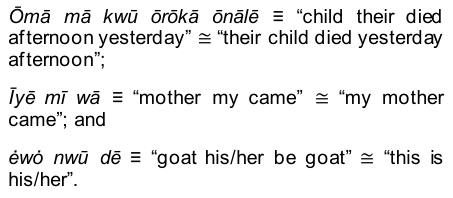
Kisha nilifanya uchanganuzi kwa kutumia kimilikishi cha kwanza kati ya vile vitatu (yaani, mā). Sentensi ya kwanza - 'Ōmā mā kwū ōrōkā ōnālē' iliwakilishwa na mti wa uchanganuzi katika Kielelezo I;
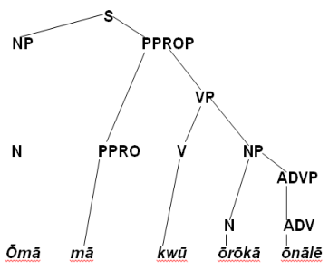
Kielelezo I: Uchanganuzi wa viambishi vimilikishi vigeuzi vya kisintaksia katika Kiigala.
Hatua iliyofuata ambayo ilikuwa sanjari na modeli iliyopendekezwa katika (mfumo uliotumiwa na mradi wa Penn Treebank) (Marcus, Kim, na Marcinkiewicz et al 1994; Santorini, 1990) ilikuwa ni kutoa ufafanuzi wa kimofosintaksia unaotegemea mabano kwa kutumia alama ya mstari chini (_) katika mfumo wa vitambulisho vya aina za maneno na matumizi ya mabano ya mraba yaliyofafanuliwa mwanzoni na mwishoni na aina ya kirai [s……] kama ifuatavyo:
[S [NP Ōmā_NP1 NP] [PPROP mā_PPROP [VP kwū_VVD [NP ōrōkā_NN1 NP] ADVP_ōnālē] S]
Hii pia iliandikwa kwa njia mbadala kama;
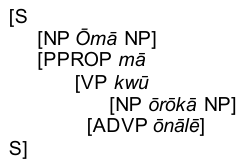
2.2 Uchanganuzi na Ufafanuzi wa Mpangilio wa Maneno wa Kiima-Kitenzi-Yambwa katika Kiigala
Aina ya mpangilio wa maneno uliotumika katika kifungu hiki kidogo hufuata muundo sawa na ule wa lugha ya Kiingereza. Baadhi ya virai na sentensi hutumia viwakilishi vya nafsi vya kiima 'I', 'you' (vyote katika umoja na katika wingi), he/she/it, we, they, na who. Nilipotoa sentensi zenye aina hizi za viwakilishi nafsi vya kiima kwa kuzingatia kuwa hivi ni yambwa vya sentensi, Treebank na ufafanuzi kuhusiana na aina hii ya mpangilio wa maneno vilifanywa kwa kutumia aina ya kiima ya nomino za pekee na nomino za kawaida ambapo nilitoa mfano mmoja tu.
Viwakilishi vya nafsi vya kiima kama kiima cha sentensi, mifano:
ȯmī k'ōmāgȯlȯ (nilichuma embe) ambayo imerahisishwa ingawa 🛇 (imekatazwa kinyume na desturi katika maandishi) kama ȯmī kā ōmāgȯlȯ (ȯmī + kā + ōmāgȯlȯ) = (mimi + nilichuma + embe);
ē/me wė ālū (you (singular)/you (plural) + shut + mouth), translated literarily as (ē/me + wė + ālū) = (you/you + shut + mouth);
ī w'ūnyī (yeye alikuja nyumbani) ambacho kimerahisishwa ingawa 🛇 kama ī wā ūnyī (ī + wā + ūnyī) = (yeye + alikuja + nyumbani);
āwā d'ūnyi (tuko nyumbani) ambacho kimerahisishwa ingawa 🛇 kama āwā + dē + ūnyi (sisi + kuwa + nyumbani);
āmā d'ōbē (wao walichukua kisu) ambacho kimerahisishwa ingawa 🛇 kama āmā + dū + ōbē (wao + walichukua + kisu); na, ēnē k'āfē? (Nani alichukua kitambaa?) Ni kipi kimerahisishwa ingawa 🛇 kama ēnē + kȯ + āfē? (Nani + alichukua + kitambaa?).
Hatua iliyofuata niliyochukua ilikuwa kuunda sentensi yenye nomino sahihi kama kiima cha sentensi na nomino ya kawaida kama yambwa ya sentensi kama ilivyofanywa katika https://www.lancaster.ac.uk/fss/courses/.This lilifanywa kwa sababu muundo wa mpangilio wa maneno unaozingatiwa katika kifungu hiki unafuata mpangilio wa maneno sawa na Kiingereza ambacho kilikuwa lugha iliyofafanuliwa katika https://www.lancaster.ac.uk/fss/courses/.The 'Ūgbėdė gw'ȯjī ȯdė kā' inayotafsiriwa kama (Ugbede aliketi juu ya kiti) ndiyo mfano uliotumika. Niligundua kwamba iwapo ile inayoitwa kanuni iliyopo ya 'ukawaida' inayotumia apostrofi (kama katika neno gw'ȯjī hapo juu) kuunganisha maneno mawili kuwa moja itashinda au kubaki imara kuhusiana na tafsiri ya mashine (MT), ufafanuzi wa kimofosintaksia wa matini unakuwa mgumu. Kama ilivyo kwa kile kinachoitwa 'kishazi' gw'ȯjī ambacho kinaweza kugawanywa kuwa maneno mawili tofauti gwu linalomaanisha 'kukaa' kwa Kiingereza na ȯjī ambalo pia linamaanisha 'kichwa' kwa Kiingereza lakini pia hutumika kumaanisha 'juu ya', 'pale juu' au 'kupita' kuhusiana na muunganiko wa pande mbili 'l'ȯjī' (kupita kichwa) kwa maana ya kitamathali zaidi (au 'alikwenda juu' kwa maana halisi) kwa sababu ya ukosefu wa neno mbadala wa kuelezea neno 'juu ya'.
Hivyo, kwa kufuata wito wa "kupanua maumbo yaliyofupishwa ya maneno mengi, ili maneno yote yawe na kategoria za kisarufi zilizobainishwa vyema", katika kufafanua sentensi, 'Ugbede aliketi juu ya kibago', nilitumia namna inayoitwa 'isiyo ya kawaida' ya kuandika sentensi 'Ūgbėdė gwū ȯjī ȯdė kā' badala ya 'Ūgbėdė gw'ȯjī ȯdė'. Sababu ikiwa ni kwamba ile ya kwanza (yaani Ūgbėdė gwū ȯjī ȯdė kā') inaweza kuchanganuliwa na kufafanuliwa kwani inalingana na Mradi wa Penn Treebank huku ile ya pili (yaani 'Ūgbėdė gw'ȯjī ȯdė kā') haiwezi. Hapa pia, kibainishi kisicho dhahiri 'a' kilibadilishwa na kiwakilishi kisicho dhahiri 'kā' ambacho tafsiri yake kwa Kiingereza ni 'one'. Ingawa niligundua kwamba vibainishi vimeainishwa kama aina za maneno huru kwa haki yake, lakini kwa vile pia huchukuliwa kama aina ya vibainishi na neno 'one' linaweza kutumika kama kibainishi, rejeleo la neno 'one' kama lilivyotumika katika sentensi limeainishwa kama kibainishi na kutendewa hivyo katika Treebank iliyowasilishwa katika Kielelezo II.
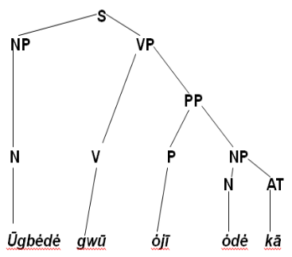
Kielelezo II: Mti wa uchanganuzi wa mpangilio wa maneno kiima-kitenzi-yambwa katika Kiigala.
Kisha, ufafanuzi wa pili wa kimofosintaksia unaotegemea mabano ukitumia alama ya mstari chini (_) kwa namna ya lebo za aina za maneno na matumizi ya mabano ya mraba yaliyofafanuliwa mwanzoni na mwishoni na aina ya kishazi [s……] ulitolewa kuhusiana na Kielelezo II kama ifuatavyo;
[S [NP Ūgbėdė_NP1 NP] [VP gwū_VVD [NP ȯjī_ II [NP ȯdė_NN1 kā_AT1 NP] NP] VP] S]
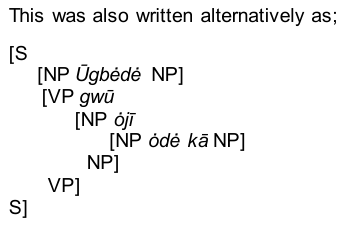
2.3 Vipashio vya Kihusishi Visivyo na Majina na Uchanganuzi wa Kishazi na Ufafanuzi katika Kiigala
Katika kifungu hiki kidogo, nilirejelea Toleo la 9 la Kamusi ya Kiingereza ya Oxford Advanced Learner's ambapo neno kihusishi lilifafanuliwa kama - "neno au kikundi cha maneno kama vile in, from, to, out of, na on behalf of, linalotumika kabla ya nomino au kiwakilishi kuonyesha mahali, nafasi, wakati au njia" (Hornby, 2015). Kwa mifano hiyo mitano (in, from, to, out of, na on behalf of) ya vihusishi hapo juu, iliongezwa mifano mingine kumi na moja iliyochukuliwa kutoka, iliyojumuisha; "beneath," "beside", "between", "in front of", "inside", "near", "off", "through", "toward", "under", na "within". Ingawa kuna hoja iliyotolewa na Ilori (2015) kuunga mkono dai lake kwamba kuna vihusishi vilivyotajwa kama aina za maneno katika Kiigala, ambapo alienda mbali zaidi hadi kupinga madai yaliyotolewa na waandishi wengine kama Atadoga (2011) na Ikani (2011) kuhusu matumizi ya sehemu za mwili kama vihusishi, lakini kupitia tathmini makini ya maumbo ya vihusishi katika Kiingereza yaliyoonyeshwa kutoka kwa Hornby (2015) hapo juu, niligundua kwamba, kwa ukweli, muundo wa kisintaksia wa lugha ya Kiigala hauna kihusishi katika maana maalum zaidi ya neno. Katika kifungu hiki kidogo, nitatoa mfano mmoja uliotolewa kutoka muhtasari wa Ilori (2015) ambapo alilichukulia neno 'tū' kama lilivyomo katika kishazi 'tú unyí un' ambapo pengine alimaanisha kusema kwamba neno 'tū' linadokeza hasa neno la Kiingereza 'to' ilhali kiuhalisia 'tū' lilimaanisha 'fungua' au 'legeza' wakati 'tū' kuhusiana na kihusishi hakina msingi wa kisintaksia na linapatikana tu wakati 'mzizi' wake (ile 't') umefungwa pamoja na neno 'ūnyī' (nyumba au makao kwa Kiingereza) kama ilivyo katika umbo 'tūnyī' kama nilivyodokeza katika kifungu kidogo cha 2.2 kuhusiana na neno/maneno 'gw'ȯjī' au 'gwū ȯjī' na jinsi umbo hili la mkato wa maneno mawili kupitia elisheni au kama suala la urahisi linavyoweza kuwa chanzo cha utata au kikwazo kwa usimbaji wa maneno katika uundaji wa miti ya uchanganuzi na ufafanuzi.
Katika mistari inayofuata, nitajaribu kuonyesha jinsi vihusishi ni vijenzi visivyo na majina katika uundaji wa kisintaksia wa sentensi katika Kiigala kwa kutumia mifano mitano ya vihusishi iliyotolewa na (Hornby, 2015) hapo juu.
Kuhusu 'in'; "ȯdūdū à wa" (asubuhi + sisi + kuja) ambayo kwa kweli inatafsiriwa kama "asubuhi tutakuja" au "tunakuja asubuhi";
Kuhusiana na 'from'; "ōmō ī kwȯ' (huko + yeye/kitu + aliondoka/kiliondoka) ambacho kwa hakika kinamaanisha ("alitoka/kilitoka huko" kwa Kiingereza). Kwa maana fulani, kitenzi 'left' kinatumika badala ya 'from' katika sarufi ya Kiigala;
Rejea tayari imefanywa kwa neno 'to' hapo juu kwa hivyo hakuna haja ya kuongeza usemi wa ziada kwa hilo hapa;
Kuhusu 'out of '; "ėfū mā ī kwȯ" (tumbo + wao + kitu + kilikuja) ambacho kwa kweli kilimaanisha ("out of them it came") kwa Kiingereza;
Kuhusu 'on behalf'; "t'ȯdū mī" (t + jina + mimi) ambayo kwa kweli inamaanisha ("because of me" kwa Kiingereza).
Hivyo, kwa kutumia sentensi ya kwanza kuhusu neno 'in', mti rahisi wa uchanganuzi pamoja na ufafanuzi wake ulitolewa ili kutoa mwanga zaidi juu ya hili. Kielelezo cha III kina mti wa uchanganuzi.
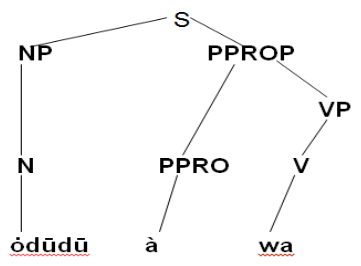
Kielelezo cha III: Mti wa uchanganuzi unaoonyesha kihusishi kisichotajwa katika Kiigala.
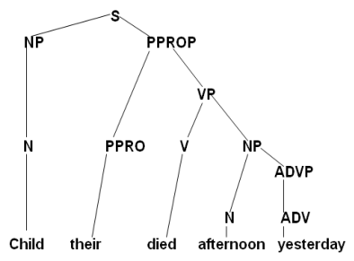
Kielelezo cha IV: Mti wa uchanganuzi unaoonyesha ubadilishaji wa viambishi vimilikishi kutoka Kiigala hadi Kiingereza.
Kisha nikaunda ufafanuzi kwa umbo la kisintaksia la mti wa uchanganuzi katika Kielelezo cha III kama ifuatavyo;
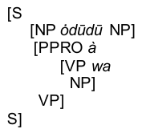
3. Ubadilishaji wa Umbo la Kisintaksia la Kiigala hadi Kiingereza
Katika sehemu hii, nilibadilisha mti wa uchanganuzi/maelezo katika sehemu iliyotangulia kuwa Kiingereza kwa namna ya tafsiri.
3.1 Ubadilishaji wa Viamua Vimilikishi vya Kiigala kuwa Kiingereza
Nilipata kwamba, kutokana na ugeuzi wa kando wa sintaksi, kuna ukosefu wa ulinganifu usio na uwiano katika kubadilisha maumbo ya kisintaksia kutoka Kiigala hadi Kiingereza kwa maana ya kifasihi kama inavyoonyeshwa hapa chini. Nilifanya ni kugeuza maneno yaliyotumika katika sehemu ya pili hapo juu kutoka Kiingereza hadi Igala.
Hivyo, aina tatu za viwakilishi; their (mā), my (mī), na, his/her (nwū) zinazingatiwa kuhusiana na matumizi yake ya kisintaksia katika virai vya Kiingereza vilivyotolewa katika mfano hapa chini.
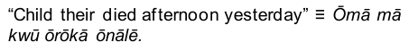
Kisha nikaunda mti wa uchanganuzi unaowakilisha mpangilio huu wa maneno kwa Kiingereza kama ifuatavyo;
Kielelezo IV kilifafanuliwa hivi; [S [NP Child_NP1 NP] [PPROP their_PPROP [VP died_VVD [NP afternoon_NN1 NP] ADVP_yesterday] S] Hii pia iliandikwa kwa namna mbadala kama; [NP afternoon NP]
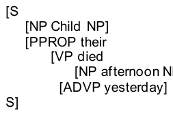
3.2 Ubadilishaji wa Mpangilio wa Maneno wa Kiima-Kitenzi-Yambwa kutoka Kiigala hadi Kiingereza
Licha ya ukweli kwamba mpangilio wa maneno wa Kiingereza wa kiima-kitenzi-yambwa pia upo katika Kiigala, kupata tafsiri sahihi kutoka Kiingereza hadi Kiigala kulionekana kuwa na tatizo kidogo kama inavyoonyeshwa kwenye Kielelezo V.
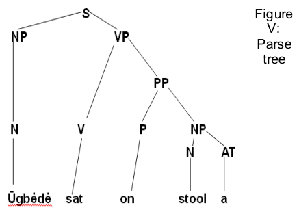
Kielelezo V: Mchoro wa mti wa uchanganuzi unaoonyesha ubadilishaji wa mpangilio wa maneno wa kiima-kitenzi-yambwa kutoka Kiigala hadi Kiingereza.
Ufafanuzi wa kisintaksia unaotegemea mabano kwa Kielelezo V ulitolewa hapa chini;
[S [NP Ugbede_NP1 NP] [VP sat_VVD [PP on_ II [NP stool_NN1 a_AT1 NP] PP] VP] S]
Hii pia iliandikwa kwa njia mbadala kama;
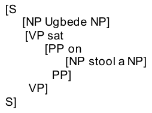
3.3 Ubadilishaji wa Miundo ya Kisintaksia ya Kiigala yenye Vipashio vya Kihusishi Visivyo na Majina kwa njia ya Uchanganuzi na Ufafanuzi katika Kiingereza
Hapa, nilichofanya ni kunakili kirai kilichotumika kwa uchanganuzi na ufafanuzi wa sentensi yenye kihusishi kisichotajwa katika kifungu kidogo cha 2.3 (yaani "ȯdūdū à wa" - (asubuhi + sisi + kuja) ambacho kilitumika kujenga uchanganuzi na ufafanuzi unaolingana katika Kiingereza. Hii iliwakilishwa katika uchanganuzi wa viambajengo kwenye Kielelezo VI na ufafanuzi unaofuata chini yake.
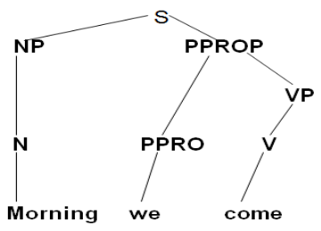
Kielelezo VI: Mti wa uchanganuzi unaoonyesha ubadilishaji wa vipashio vya kihusishi visivyo na majina kutoka Kiigala hadi Kiingereza.
Muundo wa kisintaksia wa kirai kwenye Kielelezo VI ulifafanuliwa hivi;
4. Matokeo Yaliyozalishwa kutoka kwa Muundo wa Kisarufi wa Lugha ya Kiigala
Kutokana na matokeo katika kazi hii, inakuwa wazi kwamba ufafanuzi wa muundo wa kisintaksia wa lugha ya Kiigala utabaki kuwa kazi ngumu sana. Ukweli kwamba maneno fulani yanaunganishwa kiholela kuwa moja kwa kutumia apostrofi hufanya iwe vigumu kwa maneno kudumisha umbo lao asili wakati wa uundaji wa sentensi, na hivyo kufanya ufafanuzi na utafsiri wao kuwa lugha ya pili kuwa mgumu. Athari ya hili ni kuwepo kwa ishara mchanganyiko wakati wa kujaribu kubadilisha umbo la kisintaksia kutoka lugha ya Kiigala hadi Kiingereza kwa maana mahususi zaidi.
Hivyo, katika kutumia apostrofi kuunganisha maneno mawili kuwa moja jambo ambalo kwa sasa ndivyo ilivyo miongoni mwa waandishi wengi wa lugha ya Kiigala ambapo kishazi 'leave there' huwa 'kw'ōmō' /kwomo/ badala ya 'kwȯ ōmō' /kweu omo/ na 'put there' huwa, 't'ōmō' badala ya 'tō ōmō' - zoezi linalofanywa kama njia ya kukuza ufasaha katika mazungumzo (Momoh 2023). Kwa kuwa ni lugha yenye kutenga inayounganisha mofimu za unyambulishaji zenye zaidi ya kitengo kimoja cha maana kinachowakilishwa na aina za maneno tofauti, jinsi ya kusimba neno husika na mofimu hizo pamoja na vitengo vyake vya kisarufi wakati wa uchanganuzi na ufafanuzi kwa ajili ya tafsiri inayotumia mashine inakuwa ngumu. Ingawa maneno mengi yameainishwa kuwa na uwiano wa mofimu 1:1 kwa kila neno, mengine kama 'k'ōmō' /komo/ (piga pale), 'g'ōmō' /gomo/ (angalia pale), yana uwiano wa mofimu 2:1 kwa kila neno ambao unafanana na maelezo yaliyotolewa kuhusu Kirusi na Comer (2021). Kutokana na ukweli huu, mwandishi huyu aligundua kwamba misimbo ya kisintaksia ya uchanganuzi na ufafanuzi wa aina za maneno (POS) iliyopendekezwa katika Mradi wa Penn Treebank haitoshi kwa uchanganuzi na ufafanuzi wa lugha ya Kiigala. Ikiwa kutumia vitambulishi maalum kama vile alama ya kujumlisha (+) au alama ya mkwaju (/) katika kueleza unyambulishaji, yaani kueleza umbo lililochanganuliwa la gomo (angalia pale) kama VP+ADVP au V+ADV na VP/ADVP au V/ADV kwenye vistari wima au ikiwa kuwa na maneno kama 'k'ōmō' /komo/ (piga pale), 'g'ōmō' /gomo/ (angalia pale) yaliyoandikwa bila kutumia alama ya kidokezo inayoelezwa kwa matumizi ya apostrofi bado ni suala la wasiwasi. Ijapokuwa matumizi ya + (alama ya kujumlisha) kama inavyopendekezwa hapa yanakuja na namna tofauti ya matumizi, lakini hii inakaribiana na kiashirio kilekile kilichotumika kuchanganua mkato kama PPSM+BEM katika Korasi ya awali ya Brown (Marcus, Santorini, na Marcinkiewicz, 1993).
Kuhusiana na mchoro wa kichanganuzi na ufafanuzi wa viambishi vimilikishi vilivyogeuzwa, nilipata uwiano wa wastani wa asilimia 20 tu katika mfuatano wa mpangilio wa maneno katika tafsiri ya kisintaksia kutoka Kiigala hadi Kiingereza na kinyume chake, matokeo yakiwa kwamba, kati ya maneno matano yaliyotumika kila upande, ni neno la kati tu 'kwū' na 'died' lililodumisha uthabiti katika mfuatano wa mpangilio wa maneno kama inavyoonyeshwa kwenye vistari vya wima vya tatu kwenye michoro miwili (I na IV) inayowakilisha michoro ya kichanganuzi na pia kwenye ufafanuzi wake binafsi. Kulikuwa pia na uhamishaji unaoambatana wa maneno manne (Ōmā, mā, ōrōkā, na ōnālē) kati ya maneno matano ya Kiigala na maneno manne (child, their, afternoon, na yesterday) kati ya maneno matano ya Kiingereza wakati wa ubadilishaji kutoka Kiigala kwenda Kiingereza. Kufuatia ukweli huu, nilipata asilimia 80 kufikia mwisho huu. Zaidi ya hayo, kutokana na kutokuwepo kwa kihusishi katika maumbo ya maneno ya Igala, neno 'ȯjī' (kichwa) - lakini linaweza pia kutafsiriwa kama 'thief' kwa Kiingereza na ambalo liliwakilishwa kama nomino kwenye kistari wima cha tatu cha mti wa uchanganuzi wa Kielelezo II lilibadilishwa na neno 'on' - kihusishi, baada ya ubadilishaji kwenda Kiingereza kwenye Kielelezo V. Maana yake ni mfuatano wa nomino + nomino katika mpangilio wa kisintaksia wa kishazi 'ȯjī ȯdė' kama ilivyofanywa pia na Ilori (2015) kwenye ukurasa wa 146 wa makala yake.
Kwa hivyo inamaanisha kwamba neno 'ȯjī' kwa maana ya kitamathali zaidi lingepaswa kutambuliwa kama 'on' wakati wa ubadilishaji wa neno kupitia uchanganuzi na ufafanuzi katika Kiingereza na katika hali hiyo, mchoro wa uchanganuzi na ufafanuzi wa kishazi 'Ūgbėdė gwȯjī ȯdė kā' ungepaswa kuchorwa upya kwa kufuata muundo wa Korasi ya Brown kama ifuatavyo;
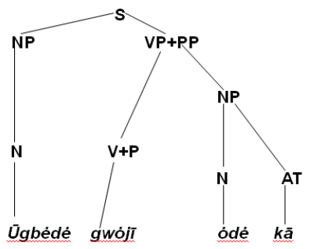
Kielelezo VII: Mti wa uchanganuzi unaoonyesha mgawanyiko wa gwȯjī kuwa gwū na ȯjī.
ȯdė_NN1 kā_AT1 NP] VP+PP] S]
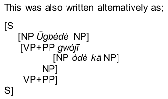
Zaidi pia, Treebank na ufafanuzi wa sintaksi kuhusiana na jedwali II na IV huonyesha ulinganifu wa asilimia 80 katika mfuatano wa maneno, matokeo yake ni kwamba, ingawa hakuna elisheni ya neno kama ilivyo kuhusiana na vielelezo I na IV, maneno 'a' na 'stool' hata hivyo yaligeuzwa kando kutoka mfuatano wa mpangilio yanavyokuwepo katika muundo wa sintaksi wa Kiigala, kiasi kwamba umbo la kisintaksi au la kifrazolojia la 'a stool' katika lugha ya Kiingereza likawa limegeuzwa kuwa 'stool a' au 'stool one' ⟺ ȯdė kā. Kutokana na ukweli huu kwamba hakuna hata kiashiria kimoja kati ya vitano vilivyowakilishwa kwenye vielelezo I hadi VI kilichokosa jina katika lugha hizo mbili, usahihi wa tafsiri wa asilimia 60 kwa kutumia kiima-kitenzi-yambwa kwa Kiigala na Kiingereza ulifikiwa. Nilipata kwamba kutoka kwa vigezo vitano vya kisintaksia vilivyodhihirishwa na vistari vitano vya wima kwenye miti ya uchanganuzi kwenye kielelezo IV na V kulikuwa na usahihi katika marudio ya neno wa 3 > 2 na hitilafu ya 2 < 3. Maana yake ni kwamba kulikuwa na hitilafu ya asilimia 40 kuelekea mwisho huu.
Kupitia kielelezo III na VI tuligundua pia aina mbili za makosa au kutokuwa sahihi katika tafsiri kutoka kwa mfuatano wa neno kwenye vielelezo kama ilivyokuwa dhahiri pia katika muundo wa mtiririko wa ufafanuzi wa maudhui ya miti ya uchanganuzi kwenye vielelezo vyote viwili. Kulikuwa na kesi za kugeuzwa upande katika tafsiri kutoka Igala kwa Kiingereza.
Kielelezo VIII ni kitafsiri cha kutambaa chenye njia mbili ambacho pia kinaweza kuwa kitafutaji cha neno-hadi-maana kupitia mabomba yanayounganisha A1 na A2 na B1 na B2. Pokeo hupokelewa kupitia upande wowote wa kifasiri huku rangi ya buluu ikiwakilisha njia za mtiririko na usambazaji wa maneno katika Kiigala huku visanduku vya rangi ya chungwa vikiwakilisha sawia ya Kiingereza. Mstatili wima katika sehemu yoyote ya visanduku vitatu vilivyo na msimbo I (ingizo) ni Transformer ambayo imeunganishwa na benki nane za maneno zinazowakilisha aina nane za maneno ambamo korasi zingeingizwa. A1 na B1 ni vipokezi vya maneno huku A2 na B2 ni vichanganuzi lakini vinaweza pia kufanya kazi kwa njia mbadala kama kichakataji cha ingizo na tokeo ikiwa mashine itaamrishwa kutafuta neno na maana katika lugha iliyotolewa.
A1 na B1 ni vichanganuzi na/au wafafanuzi wanaotegemea mashine ambao husimbua maswali yanayotumwa kutoka kwa visanduku vya I vilivyoathirika vya lugha chanzo huku A2 na B2 wakiwa ni kigeuzi cha uchanganuzi na/au ufafanuzi kuwa lugha lengwa. Sintaksi inapopitishwa kupitia visanduku mbalimbali vya I, hivi hutumwa kwenye Transformer.
Kutoka kwa visanduku vinane (8) vilivyoingizwa lema au maneno kulingana na kategoria ya aina ya neno ya kila lema, yaani, visanduku vilivyoambatishwa kwa C1 na D1, lema hizi na maana zake kama zilivyohifadhiwa katika kila moja ya visanduku vinane huunganishwa moja kwa moja kupitia mabomba manane yanayounganisha visanduku vinane na vipokezi vya maneno vilivyoambatishwa kwa Transformer binafsi.
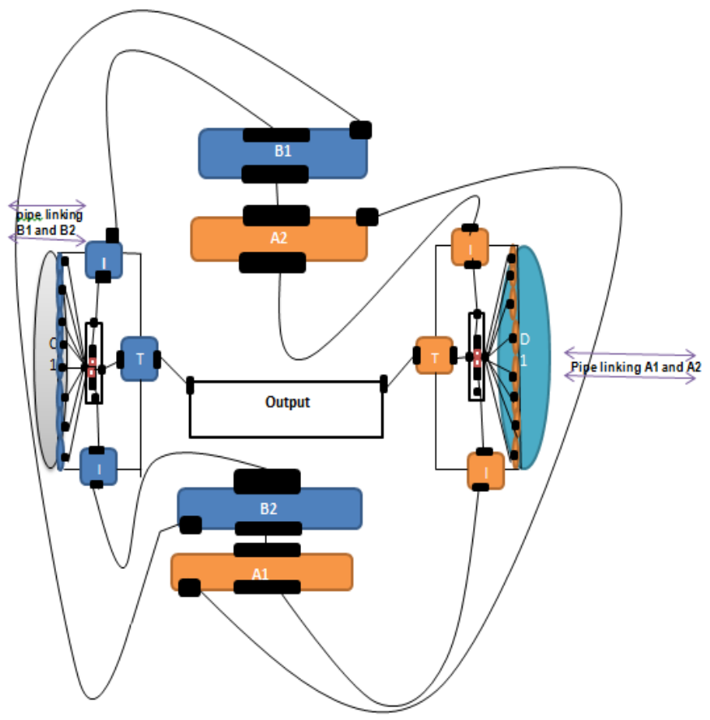
Kielelezo VIII: Mfano wa kutengeneza mashine ya kutafsiri lugha ya Kiingereza kwenda lugha ya Igala na kutoka lugha ya Igala kwenda lugha ya Kiingereza.
Wakati sintaksi zinazopokelewa na A2 na B2 zinapochanganuliwa/kufafanuliwa kupitia kigeuzi kitakachojengwa ndani ya A2 na B2, husogezwa kupitia njia inayofuata ya I kwenye bomba hadi kwa Transformer pande zote mbili za muundo. Badala ya kutafsiri sintaksi moja kwa moja, Transformer, kwa kutumia vichanganuzi vilivyounganishwa nayo, hupata maneno sawa katika visanduku vya aina za maneno, kwa kutumia vichanganuzi na vipokezi vya maneno vilivyounganishwa kwenye Transformer husika. Kupitia kipokezi cha neno, neno binafsi katika mfuatano wa kishazi/sintaksi husogezwa ndani ya kichanganuzi na kisha kutumwa ndani ya Transformer kwa uchunguzi wa kina. Ili kukabiliana na visa vya utata, ugeuzi wa kando, na viambajengo vya kisarufi visivyo na majina, Transformer itafunzwa kupitia uwekaji tagi wa aina za maneno, katika hali hiyo, wakati ikitambua maana kadhaa za lemma fulani kama zitakavyochorwa moja kwa moja kutoka C1 na D1. Matumizi ya kimuktadha kama vile l'ȯjī au lȯjī (kichwa kilichopita) kwa maana ya kifasihi zaidi, lakini kwa kweli 'alivuka', au gw'ȯjī au gwȯjī (kaa kichwa) kwa maana ya kifasihi zaidi, lakini kwa kweli 'kaa juu ya', baada ya ubadilishaji hadi Kiingereza basi yatawakilishwa katika Transformer kama l'ȯjī au lȯjī => 'alivuka', wakati umbo la kisintaksia gw'ȯjī au gwȯjī => 'kaa juu ya'. Kwa kufanya hivyo, Transformer, ingawa ingepokea maana nyingi pana juu ya maneno yanayolishwa ndani yake, ingeweza kufanya utabiri juu ya muktadha halisi ambao tafsiri inapaswa kuonekana, ili badala ya kufasiri kishazi kama gwȯjī ėbījė kama 'kaa kichwa chuma', kinakuwa gwȯjī => {kaa juu ya} + {chuma} => {kaa juu ya chuma} => {kaa juu ya kile chuma}. Utagundua wino wa kibainishi dhahiri 'the' ukiwa na usuli wenye rangi ya manjano hafifu. Sababu ni kwamba wakati wa uchanganuzi/ufafanuzi kutoka Kiigala hadi Kiingereza katika A2 kwenye kielelezo VIII, kichanganuzi/mfafanuzi hakikuweza kutambua neno 'the', lakini kwa kuwa umbo la kisintaksia 'sit on chair' halikuleta maana kamili katika Kiingereza, neno hilo lilipewa rangi tofauti kama njia ya kueleza uingizaji dhahiri ambao si wa asili katika mfuatano wa maneno wa lugha chanzo, wakati wa tafsiri.
Katika kuchunguza kwa ajili ya viambajengo vya kisarufi visivyo na majina, muundo sawa wa ufafanuzi - BIO ambao hutumika kuchunguza viambajengo vilivyo na majina katika utabiri wa neno unatumika, ingawa kwa kusudi tofauti. Muundo wa ufafanuzi wa BIO - (ndani, nje, mwanzo) ulitumika kwa mtindo sambamba ili kutambua maneno na maana zake katika lugha hizo mbili. Kupitia utoaji wa miundo ya sintaksi iliyofafanuliwa kwa BIO katika Transformer, Transformer hiyo itaweza kutambua mfuatano wa maneno unaokaribia zaidi maana ya mfuatano mwingine wa maneno katika lugha inayolingana, yaani, kuhusiana na kishazi; kā kū gbō (sema + kwamba mimi + sikia) 'say it let me hear', kishazi hiki kingefafanuliwa kwa kutumia muundo wa BIO kama; say (B), it (O), let (O), me (O), hear (I). Kupitia matumizi ya skana yenye uwezo wa kutambua vijenzi vinavyojulikana na visivyojulikana wakati wa tafsiri, inawezekana kwa mashine ya kutafsiri kuhisi maneno ambayo hayako katika mfuatano wa maneno kama yalivyotafsiriwa ambayo kwa hivyo, huyatilia alama kwa kutumia rangi ya hudhurungi iliyoonyeshwa hapo juu.
Vichanganuzi viwili vilivyoambatishwa kwa Transformer (visanduku viwili vya rangi ya tan vilivyoambatishwa kwa Transformer (kisanduku chenye umbo la mstatili wima kilichofungwa kwa C1, visanduku viwili vya I vya bluu na T ya bluu upande wa kushoto, na D1, visanduku viwili vya I vya rangi ya chungwa na kisanduku cha T cha manjano upande wa kulia)), ni vigunduzi vya maneno. Kulingana na matumizi hata hivyo, mojawapo ya visanduku hivyo vya rangi ya ngozi hutuma maneno kwa mfuatano kama yalivyopokewa kutoka kwa Transformer kutoka A2 au B2 kupitia mojawapo ya I mbili upande wowote wa kielelezo VIII, kufuatia uchanganuzi na ufafanuzi. Kisha hutambua maneno haya maneno haya na maana zake kupitia utaratibu wa kutambaa kwa maana zaidi kama injini ya Utafutaji ya Google kutoka kwa mojawapo ya visanduku vinane vya aina za maneno vilivyo kwenye pande mbili za mbali za modeli kwa ajili ya kuweka tagi na kuchakata kuwa maana. Sanduku za pili za rangi ya ngozi ndani ya Transformer; zile mbili zilizo juu, hukusanya na kurudisha maneno na maana ambazo hazijachaguliwa kutoka kwenye Transformer kurudi kwenye visanduku vya aina za maneno vilikotokea katika C1 na D1. Maneno yanapochakatwa kwenye Transformer, visawe vyake vilivyotafsiriwa hutumwa kupitia bomba hadi kwenye visanduku viwili vya T kila upande, kwa ajili ya kusambazwa mbele kwenye skrini kama matokeo.
5. Hitimisho
Madhumuni ya makala haya kwa hiyo yalichipuka kutokana na hitaji la kuunda miti ya uchanganuzi na ufafanuzi wa sintaksi ambayo ingeweza kutumika kama msingi wa nyenzo za kuingiza data zinazoweza kutumika kwa ajili ya uundaji wa korasi ya lugha ya Kiigala, nyenzo muhimu ambayo 'haipo' kikweli kwa sababu juhudi za awali za Ayegba et al. (2017) hazitoshelezi kwa kukosa uundaji wa kina unaohitajika huku makala ya Joshua et al., (2020) yakiwa na korasi zilizojengwa kwenye violesura vya programu, hata hivyo hazijalenga kipekee korasi na kwa hivyo hazijakamilika vya kutosha kutumikia kiini cha somo hilo - korasi.
6. Shukrani
Hili lilifanywa kupitia kutia moyo na usaidizi wa kiufundi ambao nilipokea kutoka kwa Profesa Menno van Zaanen wa Chuo Kikuu cha Northwest nchini Afrika Kusini na timu yake yote kutoka Kituo cha Lugha ya Dijitali cha Afrika Kusini (SADiLaR). Zaidi ya hayo, shukrani zangu zinaenda kwa uongozi wa Idara ya Historia na Mafunzo ya Usalama ya Chuo Kikuu cha Umaru Musa Yar'adua (UMYU) huko Katsina ambako kwa sasa ni mwanafunzi wa uzamili na uongozi wa Chuo Kikuu cha Prince Abubakar Audu (PAAU), Anyigba, jimbo la Kogi, Nigeria, ambako kwa sasa ninafanya kazi kwa uvumilivu wao na kutia moyo katika kipindi chote cha utafiti huu - kwa neno maalum la 'asante' kwa Makamu Mkuu wa PAAU, Profesa Marietu Ohunene Tenuche na Mkuu wa sasa wa Idara ya Historia na Mafunzo ya Usalama katika UMYU, Dkt. Waisu Safana. Inapaswa pia kutajwa juhudi za mjomba wangu mpendwa, marehemu Alhaji Ibrahim Sule ambaye alikuwa mkono ulionishika shuleni baada ya kumpoteza baba yangu nikiwa na umri wa miaka sita tu. Juhudi za pamoja za watu/vikundi vilivyotajwa hapo juu, iwe kwa maana ya karibu au ya mbali kuelekea makala hii, zitabaki kuwa mbichi moyoni mwangu daima.
7. Taarifa ya Maadili
Wakati wa kubuni kazi ya aina hii, kuna masuala mengi ya kushughulikiwa kama vile sifa ambayo seti za data saidizi hutolewa, swali la kama pembejeo zilizopo zinazoweza kutumika kuunda mtafsiri wa mashine kama vile tokeni, lemma, na korasi kwa lugha yenye rasilimali chache kama Kiigala ambapo mengi ya yaliyopo kama data yanahitaji uthibitishaji wa ziada kabla ya kuingizwa katika aina nyingine za rasilimali bado ni swali linalouma. Ingawa Usahihi wa uwasilishaji na mkabala uliopitishwa kuelekea uundaji wa kielelezo na mwandishi huyu hauna shaka kwa maana ya kifasihi zaidi, ukweli kwamba hakukuwa na utaratibu wa kuchanganua maumbo ya maneno yanayokaza au kuambatanisha kwa vitambulisho vya P.O.S vya Penn Treebank ulisababisha mchanganyiko wa vitambulisho hivi na mkabala tofauti uliobuniwa na mwandishi huyu huyu - ule unaokaribia seti za vitambulisho na mkabala uliotumiwa na Brown Corpus. Kwa hivyo, katika kutumia maudhui ya makala hii, uangalifu wa ziada unapaswa kuchukuliwa na watumiaji kwa sababu ya hatua na mikabala fulani ambayo huenda isiwe sahihi sana.
Maelezo
1 https://www.acsu.buffalo.edu/~dryer/DryerWalsSOVNoMap.pdf
2 https://digitalcommons.liberty.edu/cgi/viewcontent.cgi?article=1106&context=honors
3 https://doi.org/10.48448/e0np-e385
4 https://www.lancaster.ac.uk/fss/courses/ling/corpus/Corpus2/2PARSE.HTM#:~:text=This%20term%20alludes%20to%20the,article%2C%20P%3Dpreposition
5 https://www.cs.rochester.edu/u/brown/242/assts/termprojs/micha/docs/parser.html
6 https://academicguides.waldenu.edu/writingcenter/grammar/prepositions%23:~:text=%22beneath%2C%22%20%22beside%2C,street%20from%20the%20grocery%20store
8. Marejeo
Abraham Sunday Unubi. (2017). "The use of conjunctions in English and Igala: A contrastive analysis". International Journal of Advanced Multidisciplinary Research, 4(8), Pages 34-64.
Atadoga, F. T. (2011). 'Igala Morphology'. In Omachonu G. S (ed.) Igala language Studies. Saarbrucken: LAP Lambert Academic Publishing, Pages 76-102.
Attabor Theophilus Ocheja. (2019). "Syntactic Interference: A Study of Ígálá and English Noun Phrases in Malachai 1:6 and Mathew 2:1". Journal of Literature, Languages and Linguistics, 60, Pages 40-46.
Ayegba Sani Felix, Osuagwu O.E, and Njoku Dominic Okechukwu. (2014). "Machine Translation of Noun Phrases from English to Igala using the Rule-Based Approach". West African Journal of Industrial and Academic Research, 2(1): 18-28.
Ayegba Sani Felix, Abu Onoja, and Musa Ugbedeojo. (2017). "English - Igala Parallel Corpora for Natural Language Processing Applications". International Journal of Computer Applications, 171(9): 1-6.
Bonami Olivier, Godard Danièlle, and Marandin Jean-Marie. (1999). "Constituency and word order in French subject inversion". In Gosse Bouma, Erhard Hinrichs, Geert-Jan M. Kriujff, and Richard Oehrle (eds.) Constraints and Resources in Natural Language Syntax and Semantics. CSLI Publications, Stanford, USA, Pages 1-20.
Borsley D. Robert, Tallerman Maggie, and Willis David. (2007). The Syntax of Welsh. Cambridge University Press, Cambridge, UK, Pages 1-102.
Brunato Dominique, and Dell-Orletta Felice. (2017). "On the order of words in Italian: a study on genre vs complexity". In Proceedings of the Fourth International Conference on Dependency Linguistics, Pisa, Italy, September 18-20, Pages 25-31.
Comer J. William. (2021). "Russian's Most Frequent Words and Implications for Vocabulary Instruction," Russian Language Journal, 71(1), Emmanuel Edoja Achor, and Christiana Akor. (2015). "Exploring the Use of Igala Language in Teaching Statistics to Samples of Selected Primary Six Learners". In Proceedings of ISTE International Conference on "Towards Effective Teaching and Meaningful Learning in Mathematics, Science and Technology", University of South Africa, Pages 55-66.
Fransen Theodorus. (2020). "Automatic Morphological Parsing of Old Irish Verbs Using Finite-State Transducers". Leeds Working Papers, 1: 15-28.
Frazier Lyn. (1980). "Parsing and Constraints on Word Order". University of Massachusetts Occasional Papers, 6(5): 177-198.
Gudivada N. Venkat, and Arbabifard Kamyar. (2018). "Computational Analysis and Understanding of Natural Languages: Principles, Methods and Applications". In Gudivada N. Venkat, and Rao, C.R. Handbook of Statistic 38. https://www.sciencedirect.com/topics/computer-science/translation-model#:~:text=The%20language%20model%2 0can%20be,using%20the%20notion%20of%2 0alignments.
Hornby S. Albert. (2015). Oxford Advanced Learner's Dictionary of English, (Ninth Edition). Oxford University Press, Oxford, UK, Page 1210.
Ikani, F. E. (2011). 'Sense and Meaning Relations in Igala'. Omachonu G. S (ed.) Igala Language Studies. Saarbrucken: LAP Lambert Academic Publishing, Pages152-176.
Ileana Paul, and Postdam Eric. (2024). "Malagasy Framing Demonstratives and the Syntax of Doubling". Glossa: A Journal of General Linguistics, 9: 1-37.
Ilori, Folorunso. (2015). "Prepositions in Igala". Ihafa: A Journal of African Studies, 7(1): 139-160.
Joshua Attah, Ayegba Sani Felix, and Orah Richard Ojochegbe. (2020). "Example Based Machine Translation of English to Igala Language". International Journal of Trend in Research and Development, 7(1): Pages 32-35.
Jurafsky Daniel, and Martin H. James. (2009). Speech and Language Processing. https://en.wikipedia.org/wiki/Transfer-based_machine_translation#cite_note-slp-1
Kalin Laura. (2014). "The syntax of OVS word order in Hixkaryana". Natural Language and Linguistic Theory, 32: 1089-1104.
Mahmud Mohammed Momoh. (2023). "Vowels and the Igala Language Resources". In Proceedings of the Fourth workshop on Resources for African Indigenous Languages, pages 106-114.
Marcus Mitchell, Beatrice Santorini, and Marcinkiewicz Mary Ann. (1993). "Building a Large Annotated Corpus of English: The Penn Treebank". Association for Computational Linguistics, 19(2), pages 113-330.
Marcus Mitchell, Kim Grace, and Marcinkiewicz Mary Ann., et al. (1994). "The Penn Treebank: Annotating Predicate Argument Structure". https://aclanthology.org/H94-1020.pdf
McCone K. (1997). The Early Irish verb. Revised edition with index verborum. An Sagart, Maynooth, Ireland, Page 17.
Million Meshesha, and Yitayew Solomon. (2018). "English-Afaan Oromo Statistical Machine Translation". International Journal of Computational Linguistic, 9(1): 26-31.
Minhui Choi, and Emily Schmidt. (2015). "Postpositions and Word Order Variation in Korean". Linguistic Portfolios, 4(10): 108-115.
Mun Seongmin, and Desagulier Guillaume. (2022). "How do Transformer-Architecture Models Address Polysemy of Korean Adverbial Postpositions?". In Proceedings of Deep Learning Inside Out (DEELIO 2022): The Third Workshop on Knowledge Extraction and Integration for Deep Learning Architectures, Dublin, Ireland, Pages 11-21.
Namboodiripad Savithry, Kim Dayoung, and Kim Gyeongnam. (2017). "English-dominant Korean-speakers show reduced flexibility in constituent order". Chicago Linguistic Society, 53:
Philpot, W.T.A. (1935). "Notes on the Igala Language". Bulletin of the School of Oriental Studies, 7(4): Pages 897-912.
Santorini Beatrice. (1990). Part of Speech Tagging Guidelines for the Penn Treebank Project. https://www.cis.upenn.edu/~bies/manuals/tagguide.pdf
Wang, L., Tu, Z., and Zhang, X., et al. (2017). "A Novel and Robust Approach for Pro-drop Language Translation". Machine Translation, 31: 65-87.
English na Kiswahili
Lateral Inversions, Word Form/Order, Unnamed Grammatical Entities and Ambiguities in the Constituency Parsing and Annotation of the Igala Syntax through the English Language
Lateral Inversions, Word Form/Order, Unnamed Grammatical Entities and Ambiguities in the Constituency Parsing and Annotation of the Igala Syntax through the English Language
Affiliations
Lateral Inversions, Word Form/Order, Unnamed Grammatical Entities and
Ambiguities in the Constituency Parsing and Annotation of the Igala
Syntax through the English Language
Mahmud Mohammed Momoh
Prince Abubakar Audu University
Anyigba, Kogi state, Nigeria
Taasisi
Lateral Inversions, Word Form/Order, Unnamed Grammatical Entities and
Ambiguities in the Constituency Parsing and Annotation of the Igala
Syntax through the English Language
Mahmud Mohammed Momoh
Prince Abubakar Audu University
Anyigba, Kogi state, Nigeria
Abstract
Muhtasari
The aim of this paper is to expose the structural form of the Igala language and the inherent complexity related to the translation of the language to a second language vis-à-vis the English language through a configurational probing of its word order, lateral inversions, and unnamed grammatical entities in relation to parsing and annotation in computing. While this study finds out that there is a preponderance of a linguistic typology with subject-verb-object word order and the near total absence of preposition in the speech composition of the Igala language, this fact has not been taken as a serious subject for intellectual consideration. In this study, the abstruseness or incongruity associated with interpreting the Igala syntax through part-of-speech (POS) tagging in relation to its word order, lateral inversion of some phrases, and unnamed grammatical entities (i.e. preposition) in its speech processing into English shall be exposed. Thus, generating a comprehension model for automotive identification, application and/or conversion of these structural forms to the English language shall be the focus of this paper
Lengo la makala haya ni kufichua muundo wa kisarufi wa lugha ya Kiigala na utata wa kiasili unaohusiana na tafsiri ya lugha hiyo kwenda lugha ya pili kuhusiana na Kiingereza kupitia uchunguzi wa kimuundo wa mpangilio wa maneno yake, ugeuzaji wa kando, na viambajengo vya kisarufi visivyo na majina kuhusiana na uchanganuzi na ufafanuzi katika kompyuta. Ingawa utafiti huu unabaini kwamba kuna wingi wa taipolojia ya kiisimu yenye mpangilio wa maneno wa kiima-kitenzi-yambwa na karibu kutokuwepo kabisa kwa kihusishi katika utungaji wa usemi wa lugha ya Kiigala, ukweli huu haujachukuliwa kama somo zito kwa ajili ya kuzingatiwa kiakili. Katika utafiti huu, utata au kutopatana kunakohusishwa na kufasiri sintaksi ya Kiigala kupitia uwekaji tagi wa aina za maneno (POS) kuhusiana na mpangilio wa maneno yake, ugeuzaji wa kando wa baadhi ya vishazi, na viambajengo vya kisarufi visivyo na majina (yaani, kihusishi) katika uchakataji wake wa usemi kwenda Kiingereza utafichuliwa. Hivyo, kuzalisha modeli ya ufahamu kwa ajili ya utambuzi wa kiotomatiki, matumizi na/au ubadilishaji wa miundo hii ya kisarufi kwenda lugha ya Kiingereza ndio utakaokuwa lengo la makala haya.
Keywords
Maneno Muhimu
lateral inversion, word order, unnamed grammatical entities, parsing, annotation, Igala, English
ugeuzaji wa kando, mpangilio wa maneno, viambajengo vya kisarufi visivyo na majina, uchanganuzi, ufafanuzi, Kiigala, Kiingereza
1. Introduction
1. Utangulizi
Past works on translation of the Igala language to a second language have focused on the effectiveness of using the English language combined with Igala in teaching in primary schools (Achor and Akor, 2015), evolvement of a modeled language processor that can accept as input Noun Phrases in English language and translate these to Igala (Ayegba, Osuagwu, and Okechukwu, 2014), example acquisition (alignment), matching and recombination (Joshua, Ayegba, and Ojochegbe, 2020), syntactic interference (Attabor, 2019), and contrastive analysis on the use of conjunction (Abraham, 2017). It is worth noting that, no special focus has been placed on the unnamed grammatical entities, word ordering, and the parsing and annotation of inherent syntactic structures. This is notwithstanding the fact that, variations in grammatical rules, word forms and syntactic sequences could be a source of ambiguity and difficulty in translation and comprehension from Igala vis-à-vis the English language by both the machines and the physical learners. This sort of ambiguity has been proven in a more typical sense in regard to translation from a pro-drop language like Japanese or Korean to a non-pro-drop equivalent like English (Wang, Tu, Zhang, 2017). Although, I found out that despite the fact that the Igala language like the English language (see Dryer), French (Bonami, Godard, and Marandin, 1999), Italian (Brunato and Dell-Orletta, 2017), (Namboodiripad, Kim, and Kim, 2017), anchors mainly on a single word order (i.e. subject-verb-object (SVO)), there was still translational ambiguity in implementing an accurate syntactic parsing and annotation for the two languages. Ambiguity in translation from Igala to the English language aside, this sort of mismatch in parsing and annotation could be more serious when carrying out machine-based translation (MT) between Igala and the other languages with contrastive or differential word order such as Korean (Minhui, and Emily, 2015) which uses the postpositional speech form (Mun and Desagulier, 2022) or as in Afaan Oromo (Meshesha, and Solomon, 2018), verb-object-subject (VOS) order as in Malagasy (Ileana, and Postdam, 2024), verb-subject-object (VSO) order as in Welsh (Borsley, Tallerman, and Willis, 2007) or Old Irish (McCone, 1997), or object-verb-subject (OVS) word order as with the not so popular Cariban language; Hixkaryana (Kalin, 2014), in Brazil.
Kazi za awali kuhusu tafsiri ya lugha ya Kiigala kwenda lugha ya pili zimejikita katika ufanisi wa kutumia lugha ya Kiingereza pamoja na Kiigala katika ufundishaji katika shule za msingi (Achor na Akor, 2015), uibukaji wa kichakata lugha kilichoundwa kwa muundo ambacho kinaweza kupokea kama ingizo Vishazi Nomino katika lugha ya Kiingereza na kuvitafsiri hivi kwenda Kiigala (Ayegba, Osuagwu, na Okechukwu, 2014), upatikanaji wa mifano (ulinganishaji), ulinganifu na ujumuishaji upya (Joshua, Ayegba, na Ojochegbe, 2020), uingiliaji wa kisintaksia (Attabor, 2019), na uchanganuzi linganishi kuhusu matumizi ya viunganishi (Abraham, 2017). Inafaa kutambua kwamba, hakuna mwelekeo maalum ambao umewekwa kwenye viambajengo vya kisarufi visivyo na majina, mpangilio wa maneno, na uchanganuzi na ufafanuzi wa miundo ya kimsingi ya kisintaksia. Hii ni licha ya ukweli kwamba, tofauti katika kanuni za kisarufi, maumbo ya maneno na mifuatano ya kisintaksia inaweza kuwa chanzo cha utata na ugumu katika tafsiri na ufahamu kutoka Kiigala kuhusiana na lugha ya Kiingereza kwa mashine na wanafunzi halisi. Aina hii ya utata imethibitishwa kwa maana ya kawaida zaidi kuhusiana na tafsiri kutoka lugha inayodondosha viwakilishi kama Kijapani au Kikorea hadi lugha isiyodondosha viwakilishi sawa na Kiingereza (Wang, Tu, Zhang, 2017). Ingawa, niligundua kwamba licha ya ukweli kwamba lugha ya Igala kama lugha ya Kiingereza (tazama Dryer), Kifaransa (Bonami, Godard, na Marandin, 1999), Kiitaliano (Brunato na Dell-Orletta, 2017), (Namboodiripad, Kim, na Kim, 2017), hutegemea hasa mpangilio mmoja wa maneno (yaani kiima-kitenzi-yambwa (SVO)), bado kulikuwa na utata wa kitafsiri katika kutekeleza uchanganuzi sahihi wa kisintaksia na ufafanuzi kwa lugha hizo mbili. Ukiacha utata katika tafsiri kutoka Igala hadi lugha ya Kiingereza, aina hii ya kutolingana katika uchanganuzi na ufafanuzi inaweza kuwa mbaya zaidi wakati wa kufanya tafsiri ya mashine (MT) kati ya Igala na lugha nyingine zenye mpangilio wa maneno unaotofautiana au tofauti kama vile Kikorea (Minhui, and Emily, 2015) ambacho hutumia umbo la usemi la baada ya nomino (Mun and Desagulier, 2022) au kama katika Afaan Oromo (Meshesha, and Solomon, 2018), mpangilio wa kitenzi-yambwa-kiima (VOS) kama katika Kimalagasi (Ileana, and Postdam, 2024), mpangilio wa kitenzi-kiima-yambwa (VSO) kama katika Kiwelsh (Borsley, Tallerman, and Willis, 2007) au Kiayalandi cha Kale (McCone, 1997), au mpangilio wa maneno wa yambwa-kitenzi-kiima (OVS) kama ilivyo kwa lugha ya Kikaribi isiyojulikana sana; Hixkaryana (Kalin, 2014), nchini Brazili.
Unlike the observation by Minhui, and Emily (2015) and Namboodiripad, Kim, and Kim (2017) for the Korean language as well as another observation by Fransen (2020) for Old Irish concerning the inherence of multiple word ordering format, I found that the Igala language dwells mainly on a single word order, i.e. Subject-verb-object, as in the phrase; ū l'ōpā ≡ "I chewed groundnut" which has the same grammatical approximation in meaning and word sequence with English. However, a notable challenge bedeviling the parsing and annotation of the Igala syntax, most especially with its conversion to English is that of the lateral inversion of some syntactic forms and phrases as I did observe in respect to this; "ȯkwō wē wā", which is sequentially or literally; "grandparent your came", but actually; "your grandparent came" in the English language.
Tofauti na uchunguzi wa Minhui, na Emily (2015) na Namboodiripad, Kim, na Kim (2017) kwa lugha ya Kikorea na vilevile uchunguzi mwingine wa Fransen (2020) kwa Kiayalandi cha Kale kuhusu uwepo wa miundo mingi ya mpangilio wa maneno, niligundua kwamba lugha ya Igala hutegemea hasa mpangilio mmoja wa maneno, yaani Kiima-kitenzi-yambwa, kama katika kishazi; ū l'ōpā ≡ "I chewed groundnut" ambacho kina ukadiriaji sawa wa kisarufi katika maana na mfuatano wa maneno na Kiingereza. Hata hivyo, changamoto kubwa inayokumba uchanganuzi na ufafanuzi wa sintaksi ya Igala, hasa zaidi kwa ubadilishaji wake hadi Kiingereza ni ile ya ugeuzaji wa kando wa baadhi ya maumbo na vishazi vya kisintaksia kama nilivyoona kuhusiana na hili; "ȯkwō wē wā", ambacho kwa mfuatano au kihalisi ni; "grandparent your came", lakini kwa kweli; "your grandparent came" katika lugha ya Kiingereza.
More also, despite the translation complexity that arises from translation and language teaching when a given part of speech existing in one language does not exist in a corresponding language, from my findings, there are no clearly defined prepositions (which together with postpositions was sometimes referred to as the non-lexical heads of phrases) (Frazier, 1980) in Igala, and thus resulting in incomplete sequential word outlays, vagueness or obscuration of the basic order typology of natural languages and unclear understanding due to this lack of word alternatives during parsing, annotation and general translation as Boquist (2009) did also observed. In this paper, Igala syntactic forms lacking or not containing prepositions would be parsed through parse trees and the corresponding annotations would be converted to the English language as a way of exposing gaps in correspondence and determining the accuracy of translation.
Zaidi ya hayo, licha ya ugumu wa tafsiri unaojitokeza kutokana na tafsiri na ufundishaji wa lugha wakati aina fulani ya neno iliyopo katika lugha moja haipo katika lugha inayolingana, kutokana na matokeo yangu, hakuna vihusishi vilivyofafanuliwa wazi (ambavyo pamoja na vihusishi vya nyuma wakati mwingine vilitajwa kama vichwa visivyo vya kileksika vya vishazi) (Frazier, 1980) katika Kiigala, na hivyo kusababisha mpangilio wa maneno usiokamilika, utata au kufichwa kwa taipolojia ya msingi ya mpangilio wa lugha za asili na uelewa usio wazi kutokana na ukosefu huu wa mbadala wa maneno wakati wa uchanganuzi, ufafanuzi na tafsiri kwa jumla kama Boquist (2009) alivyoona pia. Katika makala haya, maumbo ya kisintaksia ya Igala yanayokosa au yasiyo na vihusishi yangechanganuliwa kupitia miti ya uchanganuzi na ufafanuzi unaolingana ungebadilishwa kuwa lugha ya Kiingereza kama njia ya kufichua mapengo katika ulinganifu na kubainisha Usahihi wa tafsiri.
Following the successes of Warren Weaver in the 1950s and the successes that have been recorded in machine translation thereafter - especially in the aspect of part-of-speech tagging in machine translation as Guidivada, and Arbabifard (2018) did rightly observed, I was able to parse and annotate the syntactic structure of the Igala through the English language. Acting upon the suggestion of Guidivada, and Arbabifard (2018) and Jurafsky and Martins (2009), a transfer-based approach which uses a three step process was adopted in the segmental structuring of this paper. First, some syntactic analysis (e.g., building a parse tree) is performed on the source text. Second, the syntactic structure is converted (i.e. transferred) into a corresponding structure in the target language. Finally, output is generated from the syntactic structure of the target language. The orthographic frame used in this work as well as the rule of elision expressed in subsection 2.2 conforms to the form adopted in Momoh (2023) and the video on. Furthermore, the triple bar symbol was used to represent equivalence in translation from English to Igala while the approximately equal to symbol ≅ was used to express syntactic isomorphism in translation of syntactic form having differences in lateral sequence of words between Igala and English but the same meaning upon translation to the English language. Using segmented Treebank, six trees-bearing graphs were designed where figures I, II and III contains expressions in the Igala language while IV, V, and VI deals with the English language. Thereafter, the output of the parsing and annotation done was used in demonstrating the structural form of the Machine-based translator being proposed in this paper.
Kufuatia mafanikio ya Warren Weaver katika miaka ya 1950 na mafanikio ambayo yamerekodiwa katika tafsiri ya mashine baada ya hapo - hasa katika kipengele cha uwekaji tagi wa aina za maneno katika tafsiri ya mashine kama Guidivada, na Arbabifard (2018) walivyoona kwa usahihi, niliweza kuchanganua na kufafanua muundo wa kisintaksia wa Igala kupitia lugha ya Kiingereza. Kwa kufuata pendekezo la Guidivada, na Arbabifard (2018) na Jurafsky na Martins (2009), mbinu ya msingi wa uhamishaji inayotumia mchakato wa hatua tatu ilipitishwa katika uundaji wa kimuundo wa sehemu za makala hii. Kwanza, uchanganuzi fulani wa kisintaksia (kwa mfano, kujenga mti wa uchanganuzi) unafanywa kwenye matini chanzi. Pili, muundo wa kisintaksia unabadilishwa (yaani, kuhamishwa) kuwa muundo unaolingana katika lugha lengwa. Hatimaye, matokeo huzalishwa kutoka kwa muundo wa kisarufi wa lugha inayolengwa. Mfumo wa othografia uliotumika katika kazi hii pamoja na kanuni ya elisioni iliyoelezwa katika kifungu kidogo cha 2.2 unalingana na umbo lililopitishwa katika Momoh (2023) na video kuhusu. Zaidi ya hayo, alama ya mstari mara tatu ilitumika kuwakilisha usawa katika tafsiri kutoka Kiingereza hadi Kiigala huku alama ya takriban sawa na ≅ ikitumika kueleza isomorphism ya kisintaksia katika tafsiri ya umbo la kisintaksia lenye tofauti katika mfuatano wa kando wa maneno kati ya Kiigala na Kiingereza lakini maana ileile baada ya kutafsiriwa kwa lugha ya Kiingereza. Kwa kutumia Treebank iliyogawanywa, grafu sita zenye miti zilibuniwa ambapo vielelezo I, II na III vina misemo katika lugha ya Kiigala huku IV, V, na VI zikihusika na lugha ya Kiingereza. Baada ya hapo, towe la uchanganuzi na ufafanuzi uliofanywa lilitumika katika kuonyesha umbo la kimuundo la kitafsiri chenye msingi wa Mashine kinachopendekezwa katika makala hii.
2. Syntactic Analysis, Parsing and Annotation in Igala
2. Uchanganuzi wa Kisintaksia, Uchanganuzi na Ufafanuzi katika Kiigala
In a holistic sense, the Igala language mainly uses the subject-verb-object word order.
Kwa mtazamo wa jumla, lugha ya Kiigala hasa hutumia mpangilio wa maneno kiima-kitenzi-yambwa.
2.1 Syntax Parsing and Annotation of the Igala Inverse Possessive Determiners using English
2.1 Uchanganuzi wa Kisintaksia na Ufafanuzi wa Viambishi Vimilikishi Vigeuzi vya Kiigala kwa kutumia Kiingereza
Before designing a parse tree to demonstrate this form of word sequencing in the Igala syntax, the three pronouns; mā (their), mī (my), and, nwū (his/her/it) are considered in respect of their syntactic applications to the Igala phrases demonstrated in the three forms.
Kabla ya kubuni mti wa uchanganuzi ili kuonyesha aina hii ya mpangilio wa maneno katika sintaksi ya Kiigala, viwakilishi vitatu; mā (chao), mī (changu), na, nwū (chake) vinazingatiwa kuhusiana na matumizi yake ya kisintaksia kwa vishazi vya Kiigala vilivyoonyeshwa katika maumbo matatu.
I then did the parsing using the first of the three possessives (i.e. mā). The first sentence - 'Ōmā mā kwū ōrōkā ōnālē' was represented by the parse tree in Figure I;
Kisha nilifanya uchanganuzi kwa kutumia kimilikishi cha kwanza kati ya vile vitatu (yaani, mā). Sentensi ya kwanza - 'Ōmā mā kwū ōrōkā ōnālē' iliwakilishwa na mti wa uchanganuzi katika Kielelezo I;
Figure I: Parsing of inverse syntactic determers in Igala.
Kielelezo I: Uchanganuzi wa viambishi vimilikishi vigeuzi vya kisintaksia katika Kiigala.
The next step which was in line with the model proposed in (a system used by the Penn Treebank project) (Marcus, Kim, and Marcinkiewicz et al 1994; Santorini, 1990) was to provide a bracket-based morphsyntactic annotation using underscore character (_) in the form of part of speech tags and the use of square brackets annotated at the beginning and the end with the phrase type [s……] as thus:
Hatua iliyofuata ambayo ilikuwa sanjari na modeli iliyopendekezwa katika (mfumo uliotumiwa na mradi wa Penn Treebank) (Marcus, Kim, na Marcinkiewicz et al 1994; Santorini, 1990) ilikuwa ni kutoa ufafanuzi wa kimofosintaksia unaotegemea mabano kwa kutumia alama ya mstari chini (_) katika mfumo wa vitambulisho vya aina za maneno na matumizi ya mabano ya mraba yaliyofafanuliwa mwanzoni na mwishoni na aina ya kirai [s……] kama ifuatavyo:
[S [NP Ōmā_NP1 NP] [PPROP mā_PPROP [VP kwū_VVD [NP ōrōkā_NN1 NP] ADVP_ōnālē] S]
This was also written alternatively as;
Hii pia iliandikwa kwa njia mbadala kama;
2.2 Subject-Verb-Object Word Order Parsing and Annotation in Igala
2.2 Uchanganuzi na Ufafanuzi wa Mpangilio wa Maneno wa Kiima-Kitenzi-Yambwa katika Kiigala
The form of word ordering used in this sub-section follows the same pattern as in the English language. Some phrases and sentences use subjective personal pronouns 'I', 'you' (both in the singular and in the plural form), he/she/it, we, they, and who. While I provided sentences bearing these forms of subjective personal pronouns with respect to these being objects of sentences, both the Treebank and the annotation with respect to this form of word order was done using the subjective form of proper nouns and common nouns by which I provided only one example.
Aina ya mpangilio wa maneno uliotumika katika kifungu hiki kidogo hufuata muundo sawa na ule wa lugha ya Kiingereza. Baadhi ya virai na sentensi hutumia viwakilishi vya nafsi vya kiima 'I', 'you' (vyote katika umoja na katika wingi), he/she/it, we, they, na who. Nilipotoa sentensi zenye aina hizi za viwakilishi nafsi vya kiima kwa kuzingatia kuwa hivi ni yambwa vya sentensi, Treebank na ufafanuzi kuhusiana na aina hii ya mpangilio wa maneno vilifanywa kwa kutumia aina ya kiima ya nomino za pekee na nomino za kawaida ambapo nilitoa mfano mmoja tu.
Subjective personal pronouns as subject of the sentence examples:
Viwakilishi vya nafsi vya kiima kama kiima cha sentensi, mifano:
ȯmī k'ōmāgȯlȯ (I plucked mango) which is simplified albeit 🛇 (unconventionally prohibited in writings) as ȯmī kā ōmāgȯlȯ (ȯmī + kā + ōmāgȯlȯ) = (me + plugged + mango);
ȯmī k'ōmāgȯlȯ (nilichuma embe) ambayo imerahisishwa ingawa 🛇 (imekatazwa kinyume na desturi katika maandishi) kama ȯmī kā ōmāgȯlȯ (ȯmī + kā + ōmāgȯlȯ) = (mimi + nilichuma + embe);
ē/me wė ālū (you (singular)/you (plural) + shut + mouth), translated literarily as (ē/me + wė + ālū) = (you/you + shut + mouth);
ī w'ūnyī (she/he/it came home) which is simplified albeit 🛇 as ī wā ūnyī (ī + wā + ūnyī) = (she/he/it + came + home);
ī w'ūnyī (yeye alikuja nyumbani) ambacho kimerahisishwa ingawa 🛇 kama ī wā ūnyī (ī + wā + ūnyī) = (yeye + alikuja + nyumbani);
āwā d'ūnyi (we be home/we are home) which is simplified albeit 🛇 as āwā + dē + ūnyi (we + be + home);
āwā d'ūnyi (tuko nyumbani) ambacho kimerahisishwa ingawa 🛇 kama āwā + dē + ūnyi (sisi + kuwa + nyumbani);
āmā d'ōbē (they took the knife) which is simplified albeit 🛇 as āmā + dū + ōbē (they + took + knife); and, ēnē k'āfē? (Who took the cloth?) Which is simplified albeit 🛇 as ēnē + kȯ + āfē? (Who + took + cloth?).
āmā d'ōbē (wao walichukua kisu) ambacho kimerahisishwa ingawa 🛇 kama āmā + dū + ōbē (wao + walichukua + kisu); na, ēnē k'āfē? (Nani alichukua kitambaa?) Ni kipi kimerahisishwa ingawa 🛇 kama ēnē + kȯ + āfē? (Nani + alichukua + kitambaa?).
The next step that I took was to frame a sentence with a proper noun as the subject of the sentence and a common noun as the sobject of the sentence as was done in https://www.lancaster.ac.uk/fss/courses/.This was done because the form of word ordering considered in this subsection follows the same word order as English which was the language annotated in https://www.lancaster.ac.uk/fss/courses/.The sentence 'Ūgbėdė gw'ȯjī ȯdė kā' which translates as (Ugbede sat on a stool) is the example used. I found out that should the so called prevailing rule on 'conventionality' which adopts apostrophe (as in the word gw'ȯjī above) to fuse two words to one should win through or remain consolidated with respect to machine translation (MT), morphosyntactic annotation of texts becomes complicated. As in the case of the so called 'phrase' gw'ȯjī which can be split to the two separate words gwu which means 'sit' in English and ȯjī which also means 'head' in English but also used to mean 'on', 'above' or 'over' in respect to the dual fusion 'l'ȯjī' (pass head) in a more figurative sense (or 'went over' in an actual sense) because of a want of alternative word for expressing the word 'on'.
Hatua iliyofuata niliyochukua ilikuwa kuunda sentensi yenye nomino sahihi kama kiima cha sentensi na nomino ya kawaida kama yambwa ya sentensi kama ilivyofanywa katika https://www.lancaster.ac.uk/fss/courses/.This lilifanywa kwa sababu muundo wa mpangilio wa maneno unaozingatiwa katika kifungu hiki unafuata mpangilio wa maneno sawa na Kiingereza ambacho kilikuwa lugha iliyofafanuliwa katika https://www.lancaster.ac.uk/fss/courses/.The 'Ūgbėdė gw'ȯjī ȯdė kā' inayotafsiriwa kama (Ugbede aliketi juu ya kiti) ndiyo mfano uliotumika. Niligundua kwamba iwapo ile inayoitwa kanuni iliyopo ya 'ukawaida' inayotumia apostrofi (kama katika neno gw'ȯjī hapo juu) kuunganisha maneno mawili kuwa moja itashinda au kubaki imara kuhusiana na tafsiri ya mashine (MT), ufafanuzi wa kimofosintaksia wa matini unakuwa mgumu. Kama ilivyo kwa kile kinachoitwa 'kishazi' gw'ȯjī ambacho kinaweza kugawanywa kuwa maneno mawili tofauti gwu linalomaanisha 'kukaa' kwa Kiingereza na ȯjī ambalo pia linamaanisha 'kichwa' kwa Kiingereza lakini pia hutumika kumaanisha 'juu ya', 'pale juu' au 'kupita' kuhusiana na muunganiko wa pande mbili 'l'ȯjī' (kupita kichwa) kwa maana ya kitamathali zaidi (au 'alikwenda juu' kwa maana halisi) kwa sababu ya ukosefu wa neno mbadala wa kuelezea neno 'juu ya'.
Thus, in following with the call for the "expansion of contracted forms of multiple words, so that all the words have well defined grammatical categories", in annotating the sentence, 'Ugbede sat on a stool', I used the so called 'unconventional' form of writing the sentence 'Ūgbėdė gwū ȯjī ȯdė kā' rather than 'Ūgbėdė gw'ȯjī ȯdė'. The reason being that the former (i.e. Ūgbėdė gwū ȯjī ȯdė kā') is amenable to parsing and annotation as it is in line with the Penn Treebank Project while the latter (i.e. 'Ūgbėdė gw'ȯjī ȯdė kā') is not. Here too, the indefinite article 'a' was substituted with the indefinite pronoun 'kā' which translates in English as 'one'. Although, I found out that articles are classified as separate part of speech in their own right but since they are also considered as a kind of determiners and the word 'one' can be used as a determiner, reference to the word 'one' as used in the sentence is classified as an article and treated as such in the Treebank presented in Figure II.
Hivyo, kwa kufuata wito wa "kupanua maumbo yaliyofupishwa ya maneno mengi, ili maneno yote yawe na kategoria za kisarufi zilizobainishwa vyema", katika kufafanua sentensi, 'Ugbede aliketi juu ya kibago', nilitumia namna inayoitwa 'isiyo ya kawaida' ya kuandika sentensi 'Ūgbėdė gwū ȯjī ȯdė kā' badala ya 'Ūgbėdė gw'ȯjī ȯdė'. Sababu ikiwa ni kwamba ile ya kwanza (yaani Ūgbėdė gwū ȯjī ȯdė kā') inaweza kuchanganuliwa na kufafanuliwa kwani inalingana na Mradi wa Penn Treebank huku ile ya pili (yaani 'Ūgbėdė gw'ȯjī ȯdė kā') haiwezi. Hapa pia, kibainishi kisicho dhahiri 'a' kilibadilishwa na kiwakilishi kisicho dhahiri 'kā' ambacho tafsiri yake kwa Kiingereza ni 'one'. Ingawa niligundua kwamba vibainishi vimeainishwa kama aina za maneno huru kwa haki yake, lakini kwa vile pia huchukuliwa kama aina ya vibainishi na neno 'one' linaweza kutumika kama kibainishi, rejeleo la neno 'one' kama lilivyotumika katika sentensi limeainishwa kama kibainishi na kutendewa hivyo katika Treebank iliyowasilishwa katika Kielelezo II.
Figure II: Subject-verb-object word order parse tree in Igala.
Kielelezo II: Mti wa uchanganuzi wa mpangilio wa maneno kiima-kitenzi-yambwa katika Kiigala.
Next, a second bracket-based morphsyntactic annotation using underscore character (_) in the form of part of speech tags and the use of square brackets annotated at the beginning and the end with the phrase type [s……] was provided in respect of Figure II as thus;
Kisha, ufafanuzi wa pili wa kimofosintaksia unaotegemea mabano ukitumia alama ya mstari chini (_) kwa namna ya lebo za aina za maneno na matumizi ya mabano ya mraba yaliyofafanuliwa mwanzoni na mwishoni na aina ya kishazi [s……] ulitolewa kuhusiana na Kielelezo II kama ifuatavyo;
[S [NP Ūgbėdė_NP1 NP] [VP gwū_VVD [NP ȯjī_ II [NP ȯdė_NN1 kā_AT1 NP] NP] VP] S]
2.3 Unnamed Prepositional Entities and Constituency Parsing and Annotation in Igala
2.3 Vipashio vya Kihusishi Visivyo na Majina na Uchanganuzi wa Kishazi na Ufafanuzi katika Kiigala
In this subsection, I made reference to the 9th Edition of the Oxford Advanced Learner's Dictionary of English in which the word preposition was defined as - "a word or group of words such as in, from, to, out of, and on behalf of, used before a noun or pronoun to show place, position, time or method" (Hornby, 2015). Added to this five (in, from, to, out of, and on behalf of) examples of preposition above were eleven more examples culled from, that included; "beneath," "beside", "between", "in front of", "inside", "near", "off", "through", "toward", "under", and "within". Although, there is the argument adduced by Ilori (2015) to support his claim that there are named prepositions as part-of -speech in Igala for which he went as far as counteracting the claims adduced by other writers like Atadoga (2011) and Ikani (2011) regarding the use of body parts as prepositions but through a careful assessment of the prepositional forms in English pointed out from Hornby (2015) above, I found out that, in truth, the syntactic form of the Igala language does not contain preposition in a more specified sense of the word. In this subsection, I shall cite one example drawn from Ilori (2015)'s abstract where he regarded the word 'tū' as contained in the phrase 'tú unyí un' in which he probably meant to say that the word 'tū' specifically implies the English word 'to' when in reality 'tū' meant 'unpack' or 'unfasten' while 'tū' in respect to the preposition has no syntactic base and only exists when its 'root' (the 't') is tied with the word 'ūnyī' (house or home in English) as in the form 'tūnyī' as I did pointed out in subsection 2.2 with respect to the word(s) 'gw'ȯjī' or 'gwū ȯjī' and how this form of dual-word contraction through elision or as a matter of convenience could be a source of ambiguity or encumbrance to word encoding in the design of parse trees and annotation.
Katika kifungu hiki kidogo, nilirejelea Toleo la 9 la Kamusi ya Kiingereza ya Oxford Advanced Learner's ambapo neno kihusishi lilifafanuliwa kama - "neno au kikundi cha maneno kama vile in, from, to, out of, na on behalf of, linalotumika kabla ya nomino au kiwakilishi kuonyesha mahali, nafasi, wakati au njia" (Hornby, 2015). Kwa mifano hiyo mitano (in, from, to, out of, na on behalf of) ya vihusishi hapo juu, iliongezwa mifano mingine kumi na moja iliyochukuliwa kutoka, iliyojumuisha; "beneath," "beside", "between", "in front of", "inside", "near", "off", "through", "toward", "under", na "within". Ingawa kuna hoja iliyotolewa na Ilori (2015) kuunga mkono dai lake kwamba kuna vihusishi vilivyotajwa kama aina za maneno katika Kiigala, ambapo alienda mbali zaidi hadi kupinga madai yaliyotolewa na waandishi wengine kama Atadoga (2011) na Ikani (2011) kuhusu matumizi ya sehemu za mwili kama vihusishi, lakini kupitia tathmini makini ya maumbo ya vihusishi katika Kiingereza yaliyoonyeshwa kutoka kwa Hornby (2015) hapo juu, niligundua kwamba, kwa ukweli, muundo wa kisintaksia wa lugha ya Kiigala hauna kihusishi katika maana maalum zaidi ya neno. Katika kifungu hiki kidogo, nitatoa mfano mmoja uliotolewa kutoka muhtasari wa Ilori (2015) ambapo alilichukulia neno 'tū' kama lilivyomo katika kishazi 'tú unyí un' ambapo pengine alimaanisha kusema kwamba neno 'tū' linadokeza hasa neno la Kiingereza 'to' ilhali kiuhalisia 'tū' lilimaanisha 'fungua' au 'legeza' wakati 'tū' kuhusiana na kihusishi hakina msingi wa kisintaksia na linapatikana tu wakati 'mzizi' wake (ile 't') umefungwa pamoja na neno 'ūnyī' (nyumba au makao kwa Kiingereza) kama ilivyo katika umbo 'tūnyī' kama nilivyodokeza katika kifungu kidogo cha 2.2 kuhusiana na neno/maneno 'gw'ȯjī' au 'gwū ȯjī' na jinsi umbo hili la mkato wa maneno mawili kupitia elisheni au kama suala la urahisi linavyoweza kuwa chanzo cha utata au kikwazo kwa usimbaji wa maneno katika uundaji wa miti ya uchanganuzi na ufafanuzi.
In the next lines, I shall try to demonstrate how prepositions are unnamed entities in the syntactic framing of sentences in Igala using the five examples of prepositions offered by (Hornby, 2015) above.
Katika mistari inayofuata, nitajaribu kuonyesha jinsi vihusishi ni vijenzi visivyo na majina katika uundaji wa kisintaksia wa sentensi katika Kiigala kwa kutumia mifano mitano ya vihusishi iliyotolewa na (Hornby, 2015) hapo juu.
With respect to 'in'; "ȯdūdū à wa" (morning + we + come) which actually translates as "in the morning we shall come" or "we come in the morning";
Kuhusu 'in'; "ȯdūdū à wa" (asubuhi + sisi + kuja) ambayo kwa kweli inatafsiriwa kama "asubuhi tutakuja" au "tunakuja asubuhi";
In respect to 'from'; "ōmō ī kwȯ' (there + he/she/it + left) which actually means ("he/she/it came from there" in English). In a sense, the verb 'left' is used instead of 'from' in Igala grammar;
Kuhusiana na 'from'; "ōmō ī kwȯ' (huko + yeye/kitu + aliondoka/kiliondoka) ambacho kwa hakika kinamaanisha ("alitoka/kilitoka huko" kwa Kiingereza). Kwa maana fulani, kitenzi 'left' kinatumika badala ya 'from' katika sarufi ya Kiigala;
Reference has already been made to the word 'to' above so there is no point adding extra expression to that here;
Rejea tayari imefanywa kwa neno 'to' hapo juu kwa hivyo hakuna haja ya kuongeza usemi wa ziada kwa hilo hapa;
With respect to 'out of '; "ėfū mā ī kwȯ" (belly + them + it + came) which actually meant ("out of them it came") in English;
Kuhusu 'out of '; "ėfū mā ī kwȯ" (tumbo + wao + kitu + kilikuja) ambacho kwa kweli kilimaanisha ("out of them it came") kwa Kiingereza;
With respect to 'on behalf '; "t'ȯdū mī" (t + name + me) which actually means ("because of me" in English).
Kuhusu 'on behalf'; "t'ȯdū mī" (t + jina + mimi) ambayo kwa kweli inamaanisha ("because of me" kwa Kiingereza).
Thus, using the first sentence in respect to the word 'in', a simple parse tree with its annotation was provided to shed more light on this. Figure III has the parse tree.
Hivyo, kwa kutumia sentensi ya kwanza kuhusu neno 'in', mti rahisi wa uchanganuzi pamoja na ufafanuzi wake ulitolewa ili kutoa mwanga zaidi juu ya hili. Kielelezo cha III kina mti wa uchanganuzi.
Figure III: Parse tree expressing unnamed preposition in Igala.
Kielelezo cha III: Mti wa uchanganuzi unaoonyesha kihusishi kisichotajwa katika Kiigala.
Figure IV: Parse tree showing conversion of possessive determiners from Igala to English.
Kielelezo cha IV: Mti wa uchanganuzi unaoonyesha ubadilishaji wa viambishi vimilikishi kutoka Kiigala hadi Kiingereza.
I then framed an annotation for the syntactic form of the parse tree in Figure III as thus;
Kisha nikaunda ufafanuzi kwa umbo la kisintaksia la mti wa uchanganuzi katika Kielelezo cha III kama ifuatavyo;
3. Conversion of the Igala Syntactic Form to English
3. Ubadilishaji wa Umbo la Kisintaksia la Kiigala hadi Kiingereza
In this section, I converted the parse tree/annotation in the preceding section into English in the form of a translation.
Katika sehemu hii, nilibadilisha mti wa uchanganuzi/maelezo katika sehemu iliyotangulia kuwa Kiingereza kwa namna ya tafsiri.
3.1 Conversion of the Igala Possessive Determiners to English
3.1 Ubadilishaji wa Viamua Vimilikishi vya Kiigala kuwa Kiingereza
I found that, owing to the lateral inversion of syntaxes, there is a disproportionate incongruity in converting syntactic forms in Igala to English in a figurative sense as demonstrated below. What I did was to reverse the phrases used in the second section above from English to Igala.
Nilipata kwamba, kutokana na ugeuzi wa kando wa sintaksi, kuna ukosefu wa ulinganifu usio na uwiano katika kubadilisha maumbo ya kisintaksia kutoka Kiigala hadi Kiingereza kwa maana ya kifasihi kama inavyoonyeshwa hapa chini. Nilifanya ni kugeuza maneno yaliyotumika katika sehemu ya pili hapo juu kutoka Kiingereza hadi Igala.
Thus, the three forms of pronouns; their (mā), my (mī), and, his/her (nwū) are considered in respect of their syntactic applications in the English phrases given in the example below.
Hivyo, aina tatu za viwakilishi; their (mā), my (mī), na, his/her (nwū) zinazingatiwa kuhusiana na matumizi yake ya kisintaksia katika virai vya Kiingereza vilivyotolewa katika mfano hapa chini.
I then created a parse tree representing this word order in English as thus;
Kisha nikaunda mti wa uchanganuzi unaowakilisha mpangilio huu wa maneno kwa Kiingereza kama ifuatavyo;
Figure IV was annotated a thus; [S [NP Child_NP1 NP] [PPROP their_PPROP [VP died_VVD [NP afternoon_NN1 NP] ADVP_yesterday] S] This was also written alternatively as; [NP afternoon NP]
Kielelezo IV kilifafanuliwa hivi; [S [NP Child_NP1 NP] [PPROP their_PPROP [VP died_VVD [NP afternoon_NN1 NP] ADVP_yesterday] S] Hii pia iliandikwa kwa namna mbadala kama; [NP afternoon NP]
3.2 Conversion of Subject-Verb-Object Word Order from Igala to English
3.2 Ubadilishaji wa Mpangilio wa Maneno wa Kiima-Kitenzi-Yambwa kutoka Kiigala hadi Kiingereza
Notwithstanding the fact that the English subject-verb-object word order also exists in Igala, getting an accurate translation for English to Igala proved a little bit problematic as shown in Figure V.
Licha ya ukweli kwamba mpangilio wa maneno wa Kiingereza wa kiima-kitenzi-yambwa pia upo katika Kiigala, kupata tafsiri sahihi kutoka Kiingereza hadi Kiigala kulionekana kuwa na tatizo kidogo kama inavyoonyeshwa kwenye Kielelezo V.
Figure V: Parse tree showing the conversion of subject-verb-object word order from Igala to English.
Kielelezo V: Mchoro wa mti wa uchanganuzi unaoonyesha ubadilishaji wa mpangilio wa maneno wa kiima-kitenzi-yambwa kutoka Kiigala hadi Kiingereza.
A bracket-based syntactic annotation for Figure V was given below;
Ufafanuzi wa kisintaksia unaotegemea mabano kwa Kielelezo V ulitolewa hapa chini;
[S [NP Ugbede_NP1 NP] [VP sat_VVD [PP on_ II [NP stool_NN1 a_AT1 NP] PP] VP] S]
This was also written alternatively as;
Hii pia iliandikwa kwa njia mbadala kama;
3.3 Conversion of Igala Syntactic Forms with Unnamed Prepositional Entities through Parsing and Annotation in English
3.3 Ubadilishaji wa Miundo ya Kisintaksia ya Kiigala yenye Vipashio vya Kihusishi Visivyo na Majina kwa njia ya Uchanganuzi na Ufafanuzi katika Kiingereza
Here, what I did was to copy the phrase used for the parsing and annotation of the sentence bearing the unnamed preposition in subsection 2.3 (i.e. "ȯdūdū à wa" - (morning + we + come) which was used to build a corresponding parsing and annotation in English. This was represented in the constituency parsing on Figure VI and the annotation that comes below it.
Hapa, nilichofanya ni kunakili kirai kilichotumika kwa uchanganuzi na ufafanuzi wa sentensi yenye kihusishi kisichotajwa katika kifungu kidogo cha 2.3 (yaani "ȯdūdū à wa" - (asubuhi + sisi + kuja) ambacho kilitumika kujenga uchanganuzi na ufafanuzi unaolingana katika Kiingereza. Hii iliwakilishwa katika uchanganuzi wa viambajengo kwenye Kielelezo VI na ufafanuzi unaofuata chini yake.
Figure VI: Parse tree showing the conversion of unnamed prepositional entities from Igala to English.
Kielelezo VI: Mti wa uchanganuzi unaoonyesha ubadilishaji wa vipashio vya kihusishi visivyo na majina kutoka Kiigala hadi Kiingereza.
The syntactic form of the phrase on Figure VI was annotated as thus;
Muundo wa kisintaksia wa kirai kwenye Kielelezo VI ulifafanuliwa hivi;
4. Output Generated from the Grammatical Structure of the Igala Language
4. Matokeo Yaliyozalishwa kutoka kwa Muundo wa Kisarufi wa Lugha ya Kiigala
From findings in this work, it becomes clear that annotation of the syntactic form of the Igala language would remain a herculean task. The fact that certain words are being conjoined arbitrarily as one through the use of apostrophe makes it hard for words to maintain their original form during sentence composition, making it hard for their annotation and translation to a second language. The implication of this is the presence of mixed signal while trying to convert syntactic form from the Igala language to English in a more specific sense.
Kutokana na matokeo katika kazi hii, inakuwa wazi kwamba ufafanuzi wa muundo wa kisintaksia wa lugha ya Kiigala utabaki kuwa kazi ngumu sana. Ukweli kwamba maneno fulani yanaunganishwa kiholela kuwa moja kwa kutumia apostrofi hufanya iwe vigumu kwa maneno kudumisha umbo lao asili wakati wa uundaji wa sentensi, na hivyo kufanya ufafanuzi na utafsiri wao kuwa lugha ya pili kuwa mgumu. Athari ya hili ni kuwepo kwa ishara mchanganyiko wakati wa kujaribu kubadilisha umbo la kisintaksia kutoka lugha ya Kiigala hadi Kiingereza kwa maana mahususi zaidi.
Thus, in using the apostrophe for conjoining two words as one which is currently the case among most writers of the Igala language in which case, the phrase 'leave there' becomes 'kw'ōmō' /kwomo/ rather than 'kwȯ ōmō' /kweu omo/ and 'put there' becomes, 't'ōmō' rather than 'tō ōmō' - a practice done as a way of endearing fluency in conversation (Momoh 2023). Being an isolating language agglutinating inflectional morphemes with more than one unit of meanings denoted by separate part-of -speech, how to encode the specific word and them along their individual grammatical unit during parsing and annotation for a working machine-based translation becomes difficult. While most words are classed as having a 1:1 morpheme per word ratio, others like 'k'ōmō' /komo/ (hit there), 'g'ōmō' /gomo/ (look there), have a 2:1 morpheme per word ratio that is similar to the explanation provided in respect to Russian by Comer (2021). Following from this fact, this writer found that the syntactic codes for part-of-speech (POS) parsing and annotation proposed in the Penn Treebank Project are insufficient for the parsing and annotation of the Igala language. Whether to use special identifiers such as the plus sign (+) or the slash sign (/) in expressing agglutination, i.e. to express the parsed form of gomo (look there) as VP+ADVP or V+ADV and VP/ADVP or V/ADV on the vertical dashes or whether to have words like 'k'ōmō' /komo/ (hit there), 'g'ōmō' /gomo/ (look there) written without the use of the eliciting mark expressed by the application of the apostrophe remains an issue of concern. Although the use of the + (plus sign) as suggested here comes with a different mode of application, but this comes close to the same indicator used for analyzing contraction as PPSM+BEM in the pioneering Brown Corpus (Marcus, Santorini, and Marcinkiewicz, 1993).
Hivyo, katika kutumia apostrofi kuunganisha maneno mawili kuwa moja jambo ambalo kwa sasa ndivyo ilivyo miongoni mwa waandishi wengi wa lugha ya Kiigala ambapo kishazi 'leave there' huwa 'kw'ōmō' /kwomo/ badala ya 'kwȯ ōmō' /kweu omo/ na 'put there' huwa, 't'ōmō' badala ya 'tō ōmō' - zoezi linalofanywa kama njia ya kukuza ufasaha katika mazungumzo (Momoh 2023). Kwa kuwa ni lugha yenye kutenga inayounganisha mofimu za unyambulishaji zenye zaidi ya kitengo kimoja cha maana kinachowakilishwa na aina za maneno tofauti, jinsi ya kusimba neno husika na mofimu hizo pamoja na vitengo vyake vya kisarufi wakati wa uchanganuzi na ufafanuzi kwa ajili ya tafsiri inayotumia mashine inakuwa ngumu. Ingawa maneno mengi yameainishwa kuwa na uwiano wa mofimu 1:1 kwa kila neno, mengine kama 'k'ōmō' /komo/ (piga pale), 'g'ōmō' /gomo/ (angalia pale), yana uwiano wa mofimu 2:1 kwa kila neno ambao unafanana na maelezo yaliyotolewa kuhusu Kirusi na Comer (2021). Kutokana na ukweli huu, mwandishi huyu aligundua kwamba misimbo ya kisintaksia ya uchanganuzi na ufafanuzi wa aina za maneno (POS) iliyopendekezwa katika Mradi wa Penn Treebank haitoshi kwa uchanganuzi na ufafanuzi wa lugha ya Kiigala. Ikiwa kutumia vitambulishi maalum kama vile alama ya kujumlisha (+) au alama ya mkwaju (/) katika kueleza unyambulishaji, yaani kueleza umbo lililochanganuliwa la gomo (angalia pale) kama VP+ADVP au V+ADV na VP/ADVP au V/ADV kwenye vistari wima au ikiwa kuwa na maneno kama 'k'ōmō' /komo/ (piga pale), 'g'ōmō' /gomo/ (angalia pale) yaliyoandikwa bila kutumia alama ya kidokezo inayoelezwa kwa matumizi ya apostrofi bado ni suala la wasiwasi. Ijapokuwa matumizi ya + (alama ya kujumlisha) kama inavyopendekezwa hapa yanakuja na namna tofauti ya matumizi, lakini hii inakaribiana na kiashirio kilekile kilichotumika kuchanganua mkato kama PPSM+BEM katika Korasi ya awali ya Brown (Marcus, Santorini, na Marcinkiewicz, 1993).
With respect to the parse tree and annotation of the inversed possessive determiners, I found just a 20 per cent mean correlation in the sequence of word order in the syntactic translation from Igala to English and vice versa, with the result that, out of the five words used apiece, only the median word 'kwū' and 'died' maintained consistency in the sequence of word arrangement as shown in the third vertical dashes on the two figures (I and IV) representing the parse trees and also on their individual annotations. There was also an attendant displacement of four (Ōmā, mā, ōrōkā, and ōnālē) of the five Igala words and four (child, their, afternoon, and yesterday) of the five English words upon conversion from Igala to English. Following from this fact, I found an 80 percentage point to this end. More also, owing to the nonexistence of preposition in the Igala word forms, the word 'ȯjī' (head) - but could as well be translated as 'thief ' in English and which was represented as a noun on the third vertical dash of the parse tree of Figure II was replaced with the word 'on' - a preposition, upon conversion to English on Figure V. The implication of this is a noun + noun sequence in the syntactic order of the phrase 'ȯjī ȯdė' as was also done by Ilori (2015) on page 146 of his paper.
Kuhusiana na mchoro wa kichanganuzi na ufafanuzi wa viambishi vimilikishi vilivyogeuzwa, nilipata uwiano wa wastani wa asilimia 20 tu katika mfuatano wa mpangilio wa maneno katika tafsiri ya kisintaksia kutoka Kiigala hadi Kiingereza na kinyume chake, matokeo yakiwa kwamba, kati ya maneno matano yaliyotumika kila upande, ni neno la kati tu 'kwū' na 'died' lililodumisha uthabiti katika mfuatano wa mpangilio wa maneno kama inavyoonyeshwa kwenye vistari vya wima vya tatu kwenye michoro miwili (I na IV) inayowakilisha michoro ya kichanganuzi na pia kwenye ufafanuzi wake binafsi. Kulikuwa pia na uhamishaji unaoambatana wa maneno manne (Ōmā, mā, ōrōkā, na ōnālē) kati ya maneno matano ya Kiigala na maneno manne (child, their, afternoon, na yesterday) kati ya maneno matano ya Kiingereza wakati wa ubadilishaji kutoka Kiigala kwenda Kiingereza. Kufuatia ukweli huu, nilipata asilimia 80 kufikia mwisho huu. Zaidi ya hayo, kutokana na kutokuwepo kwa kihusishi katika maumbo ya maneno ya Igala, neno 'ȯjī' (kichwa) - lakini linaweza pia kutafsiriwa kama 'thief' kwa Kiingereza na ambalo liliwakilishwa kama nomino kwenye kistari wima cha tatu cha mti wa uchanganuzi wa Kielelezo II lilibadilishwa na neno 'on' - kihusishi, baada ya ubadilishaji kwenda Kiingereza kwenye Kielelezo V. Maana yake ni mfuatano wa nomino + nomino katika mpangilio wa kisintaksia wa kishazi 'ȯjī ȯdė' kama ilivyofanywa pia na Ilori (2015) kwenye ukurasa wa 146 wa makala yake.
It therefore implies that the word 'ȯjī' in a more figurative sense would have to be recognized as 'on' during word conversion through parsing and annotation in English and in which case, both the parse tree and the annotation of the phrase 'Ūgbėdė gwȯjī ȯdė kā' would have to be redrawn in line with the Brown Corpus format as thus;
Kwa hivyo inamaanisha kwamba neno 'ȯjī' kwa maana ya kitamathali zaidi lingepaswa kutambuliwa kama 'on' wakati wa ubadilishaji wa neno kupitia uchanganuzi na ufafanuzi katika Kiingereza na katika hali hiyo, mchoro wa uchanganuzi na ufafanuzi wa kishazi 'Ūgbėdė gwȯjī ȯdė kā' ungepaswa kuchorwa upya kwa kufuata muundo wa Korasi ya Brown kama ifuatavyo;
Figure VII: Parse tree showing the splitting of gwȯjī into gwū and ȯjī.
Kielelezo VII: Mti wa uchanganuzi unaoonyesha mgawanyiko wa gwȯjī kuwa gwū na ȯjī.
ȯdė_NN1 kā_AT1 NP] VP+PP] S]
More also, the Treebank and the syntax annotation with respect to table II and IV shows an 80 per cent correlation in word sequence with the result that, while there is no word elision as it is in respect to figures I and IV, the words 'a' and 'stool' were however inversed laterally from the ordering sequence they exist in the Igala syntactic structure in so that, the syntactic or phraseological form of 'a stool' in the English language became reversed as 'stool a' or 'stool one' ⟺ ȯdė kā. Rising from this fact that none of the five indicators represented in figures I through VI was unnamed in the two languages, a 60 per cent translation accuracy using the subject-verb-object for Igala and English was arrived at. I found that from the five syntactic variables exemplified by the five vertical dashes on the parse trees on figures IV and V there was an accuracy in word frequency of 3 > 2 and an error of 2 < 3. The implication of this is that there was a 40 per cent error towards this end.
Zaidi pia, Treebank na ufafanuzi wa sintaksi kuhusiana na jedwali II na IV huonyesha ulinganifu wa asilimia 80 katika mfuatano wa maneno, matokeo yake ni kwamba, ingawa hakuna elisheni ya neno kama ilivyo kuhusiana na vielelezo I na IV, maneno 'a' na 'stool' hata hivyo yaligeuzwa kando kutoka mfuatano wa mpangilio yanavyokuwepo katika muundo wa sintaksi wa Kiigala, kiasi kwamba umbo la kisintaksi au la kifrazolojia la 'a stool' katika lugha ya Kiingereza likawa limegeuzwa kuwa 'stool a' au 'stool one' ⟺ ȯdė kā. Kutokana na ukweli huu kwamba hakuna hata kiashiria kimoja kati ya vitano vilivyowakilishwa kwenye vielelezo I hadi VI kilichokosa jina katika lugha hizo mbili, usahihi wa tafsiri wa asilimia 60 kwa kutumia kiima-kitenzi-yambwa kwa Kiigala na Kiingereza ulifikiwa. Nilipata kwamba kutoka kwa vigezo vitano vya kisintaksia vilivyodhihirishwa na vistari vitano vya wima kwenye miti ya uchanganuzi kwenye kielelezo IV na V kulikuwa na usahihi katika marudio ya neno wa 3 > 2 na hitilafu ya 2 < 3. Maana yake ni kwamba kulikuwa na hitilafu ya asilimia 40 kuelekea mwisho huu.
Through figures III and VI we also noticed two kinds of errors or inaccuracy in translation from the sequence of word on the figures as was also apparent in the flow pattern of the annotation of the content of the parse trees on both figures. There were cases of lateral inversion in translation from Igala to English.
Kupitia kielelezo III na VI tuligundua pia aina mbili za makosa au kutokuwa sahihi katika tafsiri kutoka kwa mfuatano wa neno kwenye vielelezo kama ilivyokuwa dhahiri pia katika muundo wa mtiririko wa ufafanuzi wa maudhui ya miti ya uchanganuzi kwenye vielelezo vyote viwili. Kulikuwa na kesi za kugeuzwa upande katika tafsiri kutoka Igala kwa Kiingereza.
Figure VIII is a two-way crawling translator that can also be a word-to-meaning finder through the pipes connecting A1 and A2 and B1 and B2. Input is received via either side of the translator with the blue colour representing channels for the flow and transmission of words in Igala while the orange colour boxes represent the English equivalent. The vertical rectangle in either portion of the three boxes coded I (input) is the transformer which is connected to eight word banks representing the eight parts of speech in which the corpuses would be fed. A1 and B1 are word receivers while A2 and B2 are parsers but can also function alternatively as input and output processor if the machine is commanded to find word and meaning in the given language.
Kielelezo VIII ni kitafsiri cha kutambaa chenye njia mbili ambacho pia kinaweza kuwa kitafutaji cha neno-hadi-maana kupitia mabomba yanayounganisha A1 na A2 na B1 na B2. Pokeo hupokelewa kupitia upande wowote wa kifasiri huku rangi ya buluu ikiwakilisha njia za mtiririko na usambazaji wa maneno katika Kiigala huku visanduku vya rangi ya chungwa vikiwakilisha sawia ya Kiingereza. Mstatili wima katika sehemu yoyote ya visanduku vitatu vilivyo na msimbo I (ingizo) ni Transformer ambayo imeunganishwa na benki nane za maneno zinazowakilisha aina nane za maneno ambamo korasi zingeingizwa. A1 na B1 ni vipokezi vya maneno huku A2 na B2 ni vichanganuzi lakini vinaweza pia kufanya kazi kwa njia mbadala kama kichakataji cha ingizo na tokeo ikiwa mashine itaamrishwa kutafuta neno na maana katika lugha iliyotolewa.
A1 and B1 are machine-based parsers and/or annotators that decode questions transmitted from the affected I boxes of the source language(s) while A2 and B2 are parse and/or annotation converter into the target language. With the syntax moved through the various I boxes, these are sent into the transformer.
A1 na B1 ni vichanganuzi na/au wafafanuzi wanaotegemea mashine ambao husimbua maswali yanayotumwa kutoka kwa visanduku vya I vilivyoathirika vya lugha chanzo huku A2 na B2 wakiwa ni kigeuzi cha uchanganuzi na/au ufafanuzi kuwa lugha lengwa. Sintaksi inapopitishwa kupitia visanduku mbalimbali vya I, hivi hutumwa kwenye Transformer.
From the eight (8) boxes fed lemmas or words according to the given part of speech category of each lemma, i.e. boxes attached to C1 and D1, these lemmas and their meanings as stored in each of the eight boxes are connected directly through the eight pipes linking the eight boxes to the word receivers attached to the individual transformer.
Kutoka kwa visanduku vinane (8) vilivyoingizwa lema au maneno kulingana na kategoria ya aina ya neno ya kila lema, yaani, visanduku vilivyoambatishwa kwa C1 na D1, lema hizi na maana zake kama zilivyohifadhiwa katika kila moja ya visanduku vinane huunganishwa moja kwa moja kupitia mabomba manane yanayounganisha visanduku vinane na vipokezi vya maneno vilivyoambatishwa kwa Transformer binafsi.
Figure VIII: Bidirectional model for the design of a Machine Translator of English to Igala and from Igala to English.
Kielelezo VIII: Mfano wa kutengeneza mashine ya kutafsiri lugha ya Kiingereza kwenda lugha ya Igala na kutoka lugha ya Igala kwenda lugha ya Kiingereza.
When syntax received by A2 and B2 are parsed/annotated through the converter to be built into A2 and B2, they are moved through the next I channel on the pipeline to the transformers on either side of the model. Rather than translating the syntax directly, the transformer, using scanners connected to it, finds words equivalents in the part-of -speech boxes, using the scanners and word receivers attached to the individual transformer. Through the word receiver, the individual word in the phrase/syntax sequence are moved into the scanner and then sent into the transformer for scrutiny. To deal with cases of ambiguity, lateral inversion, and unnamed grammatical entities, the transformer shall be trained through part-of -speech tagging, in which case, while recognizing several meanings of a given lemma as shall be drawn directly from C1 and D1. Contextual applications such as l'ȯjī or lȯjī (passed head) in a more literary sense, but actually 'went over', or gw'ȯjī or gwȯjī (sit head) in a more literary sense, but actually 'sit on', upon conversion to English would then be represented in the transformer as l'ȯjī or lȯjī => 'went over', while the syntactic form gw'ȯjī or gwȯjī => 'sit on'. In so doing, the transformer, even though it would receive a wide multiple meanings on the words being fed into it would be able to make prediction on the actual context the translation should appear, so that rather than interpreting a phrase like gwȯjī ėbījė as 'sit head iron', it becomes gwȯjī => {sit on} + {iron} => {sit on iron} => {sit on the iron}. You will notice the inking of the definite article 'the' with a tan tinted background. The reason is that upon parsing/annotation from Igala to English at A2 on figure VIII, the parser/annotator could not identify the word 'the', but since the syntactic form 'sit on chair' did not make a perfect sense in English, the word was given a separate colour as a way of expressing explicit insertion that are not intrinsic in the word sequence of the source language, upon translation.
Wakati sintaksi zinazopokelewa na A2 na B2 zinapochanganuliwa/kufafanuliwa kupitia kigeuzi kitakachojengwa ndani ya A2 na B2, husogezwa kupitia njia inayofuata ya I kwenye bomba hadi kwa Transformer pande zote mbili za muundo. Badala ya kutafsiri sintaksi moja kwa moja, Transformer, kwa kutumia vichanganuzi vilivyounganishwa nayo, hupata maneno sawa katika visanduku vya aina za maneno, kwa kutumia vichanganuzi na vipokezi vya maneno vilivyounganishwa kwenye Transformer husika. Kupitia kipokezi cha neno, neno binafsi katika mfuatano wa kishazi/sintaksi husogezwa ndani ya kichanganuzi na kisha kutumwa ndani ya Transformer kwa uchunguzi wa kina. Ili kukabiliana na visa vya utata, ugeuzi wa kando, na viambajengo vya kisarufi visivyo na majina, Transformer itafunzwa kupitia uwekaji tagi wa aina za maneno, katika hali hiyo, wakati ikitambua maana kadhaa za lemma fulani kama zitakavyochorwa moja kwa moja kutoka C1 na D1. Matumizi ya kimuktadha kama vile l'ȯjī au lȯjī (kichwa kilichopita) kwa maana ya kifasihi zaidi, lakini kwa kweli 'alivuka', au gw'ȯjī au gwȯjī (kaa kichwa) kwa maana ya kifasihi zaidi, lakini kwa kweli 'kaa juu ya', baada ya ubadilishaji hadi Kiingereza basi yatawakilishwa katika Transformer kama l'ȯjī au lȯjī => 'alivuka', wakati umbo la kisintaksia gw'ȯjī au gwȯjī => 'kaa juu ya'. Kwa kufanya hivyo, Transformer, ingawa ingepokea maana nyingi pana juu ya maneno yanayolishwa ndani yake, ingeweza kufanya utabiri juu ya muktadha halisi ambao tafsiri inapaswa kuonekana, ili badala ya kufasiri kishazi kama gwȯjī ėbījė kama 'kaa kichwa chuma', kinakuwa gwȯjī => {kaa juu ya} + {chuma} => {kaa juu ya chuma} => {kaa juu ya kile chuma}. Utagundua wino wa kibainishi dhahiri 'the' ukiwa na usuli wenye rangi ya manjano hafifu. Sababu ni kwamba wakati wa uchanganuzi/ufafanuzi kutoka Kiigala hadi Kiingereza katika A2 kwenye kielelezo VIII, kichanganuzi/mfafanuzi hakikuweza kutambua neno 'the', lakini kwa kuwa umbo la kisintaksia 'sit on chair' halikuleta maana kamili katika Kiingereza, neno hilo lilipewa rangi tofauti kama njia ya kueleza uingizaji dhahiri ambao si wa asili katika mfuatano wa maneno wa lugha chanzo, wakati wa tafsiri.
In probing for the unnamed grammatical entities, a similar annotation format - the BIO which is used for probing named entities in word prediction is used, although with a different purpose. The BIO annotation format - (inside, outside, beginning) was used in a parallel fashion to detect words and their meanings in the two language. Through the provision of the BIO annotated forms of syntax in the transformer, the transformer would be able to identify word sequence that comes closer to the meaning of another word sequence in the corresponding language, i.e. in respect to the phrase; kā kū gbō (say + that I + hear) 'say it let me hear', this phrase would be annotated using the BIO format as; say (B), it (O), let (O), me (O), hear (I). Through the application of a scanner with the capacity to detect both known and unknown entities during translation, it becomes possible for the translating machine to sense words that are not in the word sequence as translated which it thus, marks out using the tan colour pointed out above.
Katika kuchunguza kwa ajili ya viambajengo vya kisarufi visivyo na majina, muundo sawa wa ufafanuzi - BIO ambao hutumika kuchunguza viambajengo vilivyo na majina katika utabiri wa neno unatumika, ingawa kwa kusudi tofauti. Muundo wa ufafanuzi wa BIO - (ndani, nje, mwanzo) ulitumika kwa mtindo sambamba ili kutambua maneno na maana zake katika lugha hizo mbili. Kupitia utoaji wa miundo ya sintaksi iliyofafanuliwa kwa BIO katika Transformer, Transformer hiyo itaweza kutambua mfuatano wa maneno unaokaribia zaidi maana ya mfuatano mwingine wa maneno katika lugha inayolingana, yaani, kuhusiana na kishazi; kā kū gbō (sema + kwamba mimi + sikia) 'say it let me hear', kishazi hiki kingefafanuliwa kwa kutumia muundo wa BIO kama; say (B), it (O), let (O), me (O), hear (I). Kupitia matumizi ya skana yenye uwezo wa kutambua vijenzi vinavyojulikana na visivyojulikana wakati wa tafsiri, inawezekana kwa mashine ya kutafsiri kuhisi maneno ambayo hayako katika mfuatano wa maneno kama yalivyotafsiriwa ambayo kwa hivyo, huyatilia alama kwa kutumia rangi ya hudhurungi iliyoonyeshwa hapo juu.
The two scanners attached to the transformers (the two tan-colour boxes attached to the transformer (the box with the vertical rectangle shape tied to C1, the two blue I boxes and the blue T to the left, and D1, the two orange colour I boxes and the yellow T box to the right)), are word detectors. Depending on the application though, either of these tan boxes send words in sequence as received from the transformer from either A2 or B2 through any of the two I on either side of figure VIII, following parsing and annotation. It then sense these words these words and their meanings through a crawling mechanism in more of a sense as the Google Search engine from either of the eight part-of -speech boxes on the two far flanks of the model for tagging and processing into meaning. The second tan boxes inside of the transformer; the two at the top, collects and returns unselected words and meanings from the transformer back to the part-of-speech boxes they evolved from in C1 and D1. When words are processed in the transformer, the translated equivalent are send via a pipe to the two T boxes on either side, for onward transmission to the screen as output.
Vichanganuzi viwili vilivyoambatishwa kwa Transformer (visanduku viwili vya rangi ya tan vilivyoambatishwa kwa Transformer (kisanduku chenye umbo la mstatili wima kilichofungwa kwa C1, visanduku viwili vya I vya bluu na T ya bluu upande wa kushoto, na D1, visanduku viwili vya I vya rangi ya chungwa na kisanduku cha T cha manjano upande wa kulia)), ni vigunduzi vya maneno. Kulingana na matumizi hata hivyo, mojawapo ya visanduku hivyo vya rangi ya ngozi hutuma maneno kwa mfuatano kama yalivyopokewa kutoka kwa Transformer kutoka A2 au B2 kupitia mojawapo ya I mbili upande wowote wa kielelezo VIII, kufuatia uchanganuzi na ufafanuzi. Kisha hutambua maneno haya maneno haya na maana zake kupitia utaratibu wa kutambaa kwa maana zaidi kama injini ya Utafutaji ya Google kutoka kwa mojawapo ya visanduku vinane vya aina za maneno vilivyo kwenye pande mbili za mbali za modeli kwa ajili ya kuweka tagi na kuchakata kuwa maana. Sanduku za pili za rangi ya ngozi ndani ya Transformer; zile mbili zilizo juu, hukusanya na kurudisha maneno na maana ambazo hazijachaguliwa kutoka kwenye Transformer kurudi kwenye visanduku vya aina za maneno vilikotokea katika C1 na D1. Maneno yanapochakatwa kwenye Transformer, visawe vyake vilivyotafsiriwa hutumwa kupitia bomba hadi kwenye visanduku viwili vya T kila upande, kwa ajili ya kusambazwa mbele kwenye skrini kama matokeo.
5. Conclusion
5. Hitimisho
The purpose of this paper therefore sprang from the need to create parsing trees and syntax annotation that could serve as bedrock of input materials that could be used for the development of a language corpus for the Igala, a needful resource that does not 'really' exist because previous efforts by Ayegba et al. (2017) are inadequate for want of extensive modeling required while the paper by Joshua et al., (2020) does contain corpuses built on program interfaces, they are however not centered exclusively to corpuses and so they are not so comprehensive enough to serve the essence of that subject - corpus.
Madhumuni ya makala haya kwa hiyo yalichipuka kutokana na hitaji la kuunda miti ya uchanganuzi na ufafanuzi wa sintaksi ambayo ingeweza kutumika kama msingi wa nyenzo za kuingiza data zinazoweza kutumika kwa ajili ya uundaji wa korasi ya lugha ya Kiigala, nyenzo muhimu ambayo 'haipo' kikweli kwa sababu juhudi za awali za Ayegba et al. (2017) hazitoshelezi kwa kukosa uundaji wa kina unaohitajika huku makala ya Joshua et al., (2020) yakiwa na korasi zilizojengwa kwenye violesura vya programu, hata hivyo hazijalenga kipekee korasi na kwa hivyo hazijakamilika vya kutosha kutumikia kiini cha somo hilo - korasi.
6. Acknowledgement
6. Shukrani
This was conducted through the encouragement and the technical support that I received from Professor Menno van Zaanen of the Northwest University in South Africa and the rest of his team from the South African Center for Digital Language (SADiLaR). More also, my gratitude goes to the management of the Department of History and Security Studies of the Umaru Musa Yar'adua University (UMYU) in Katsina where am currently a graduate student and the management of the Prince Abubakar Audu University (PAAU), Anyigba, Kogi state, Nigeria, where am currently working for their patience and encouragement through the period of this research - with a special word of 'thank you' for the Vice Chancellor of PAAU, Professor Marietu Ohunene Tenuche and the current Head of Department of History and Security Studies at UMYU, Dr Waisu Safana. It is also worth mentioning the effort of my dear uncle, the late Alhaji Ibrahim Sule who was the hand the held me through school after I lost my dad at just six years of age. The collective effort of the aforementioned persons/groups, either in an immediate or remote sense towards this paper would always remain fresh in my heart.
Hili lilifanywa kupitia kutia moyo na usaidizi wa kiufundi ambao nilipokea kutoka kwa Profesa Menno van Zaanen wa Chuo Kikuu cha Northwest nchini Afrika Kusini na timu yake yote kutoka Kituo cha Lugha ya Dijitali cha Afrika Kusini (SADiLaR). Zaidi ya hayo, shukrani zangu zinaenda kwa uongozi wa Idara ya Historia na Mafunzo ya Usalama ya Chuo Kikuu cha Umaru Musa Yar'adua (UMYU) huko Katsina ambako kwa sasa ni mwanafunzi wa uzamili na uongozi wa Chuo Kikuu cha Prince Abubakar Audu (PAAU), Anyigba, jimbo la Kogi, Nigeria, ambako kwa sasa ninafanya kazi kwa uvumilivu wao na kutia moyo katika kipindi chote cha utafiti huu - kwa neno maalum la 'asante' kwa Makamu Mkuu wa PAAU, Profesa Marietu Ohunene Tenuche na Mkuu wa sasa wa Idara ya Historia na Mafunzo ya Usalama katika UMYU, Dkt. Waisu Safana. Inapaswa pia kutajwa juhudi za mjomba wangu mpendwa, marehemu Alhaji Ibrahim Sule ambaye alikuwa mkono ulionishika shuleni baada ya kumpoteza baba yangu nikiwa na umri wa miaka sita tu. Juhudi za pamoja za watu/vikundi vilivyotajwa hapo juu, iwe kwa maana ya karibu au ya mbali kuelekea makala hii, zitabaki kuwa mbichi moyoni mwangu daima.
7. Ethical Statement
7. Taarifa ya Maadili
While conceiving a work of this nature, there are lots of issues to be dealt with such as the merit from which supportive datasets are extracted, the question as to whether available inputs that can be used to model a machine-based translator such as the tokens, lemmas, and the corpuses for an under-resourced language like the Igala where most of what exists as data needs extra verification before incorporation into other resource forms remains a biting question. Although while the accuracy of presentation and the approach adopted toward modeling by this author is not in doubt in a more literary sense, the fact that the was no provision for parsing contractive or agglutinative word forms by the Penn Treebank P.O.S tags led to the blending of these tags with a separate approach that was evolved by this very author - one that comes close to the tag sets and approach used by the Brown Corpus. Thus, in using the content of this paper, extra care should be taken by the consumers because of certain steps and approaches that might not be so accurate.
Wakati wa kubuni kazi ya aina hii, kuna masuala mengi ya kushughulikiwa kama vile sifa ambayo seti za data saidizi hutolewa, swali la kama pembejeo zilizopo zinazoweza kutumika kuunda mtafsiri wa mashine kama vile tokeni, lemma, na korasi kwa lugha yenye rasilimali chache kama Kiigala ambapo mengi ya yaliyopo kama data yanahitaji uthibitishaji wa ziada kabla ya kuingizwa katika aina nyingine za rasilimali bado ni swali linalouma. Ingawa Usahihi wa uwasilishaji na mkabala uliopitishwa kuelekea uundaji wa kielelezo na mwandishi huyu hauna shaka kwa maana ya kifasihi zaidi, ukweli kwamba hakukuwa na utaratibu wa kuchanganua maumbo ya maneno yanayokaza au kuambatanisha kwa vitambulisho vya P.O.S vya Penn Treebank ulisababisha mchanganyiko wa vitambulisho hivi na mkabala tofauti uliobuniwa na mwandishi huyu huyu - ule unaokaribia seti za vitambulisho na mkabala uliotumiwa na Brown Corpus. Kwa hivyo, katika kutumia maudhui ya makala hii, uangalifu wa ziada unapaswa kuchukuliwa na watumiaji kwa sababu ya hatua na mikabala fulani ambayo huenda isiwe sahihi sana.
Notes
Maelezo
1 https://www.acsu.buffalo.edu/~dryer/DryerWalsSOVNoMap.pdf
2 https://digitalcommons.liberty.edu/cgi/viewcontent.cgi?article=1106&context=honors
3 https://doi.org/10.48448/e0np-e385
4 https://www.lancaster.ac.uk/fss/courses/ling/corpus/Corpus2/2PARSE.HTM#:~:text=This%20term%20alludes%20to%20the,article%2C%20P%3Dpreposition
5 https://www.cs.rochester.edu/u/brown/242/assts/termprojs/micha/docs/parser.html
6 https://academicguides.waldenu.edu/writingcenter/grammar/prepositions%23:~:text=%22beneath%2C%22%20%22beside%2C,street%20from%20the%20grocery%20store
8. References
8. Marejeo
Abraham Sunday Unubi. (2017). "The use of conjunctions in English and Igala: A contrastive analysis". International Journal of Advanced Multidisciplinary Research, 4(8), Pages 34-64.
Atadoga, F. T. (2011). 'Igala Morphology'. In Omachonu G. S (ed.) Igala language Studies. Saarbrucken: LAP Lambert Academic Publishing, Pages 76-102.
Attabor Theophilus Ocheja. (2019). "Syntactic Interference: A Study of Ígálá and English Noun Phrases in Malachai 1:6 and Mathew 2:1". Journal of Literature, Languages and Linguistics, 60, Pages 40-46.
Ayegba Sani Felix, Osuagwu O.E, and Njoku Dominic Okechukwu. (2014). "Machine Translation of Noun Phrases from English to Igala using the Rule-Based Approach". West African Journal of Industrial and Academic Research, 2(1): 18-28.
Ayegba Sani Felix, Abu Onoja, and Musa Ugbedeojo. (2017). "English - Igala Parallel Corpora for Natural Language Processing Applications". International Journal of Computer Applications, 171(9): 1-6.
Bonami Olivier, Godard Danièlle, and Marandin Jean-Marie. (1999). "Constituency and word order in French subject inversion". In Gosse Bouma, Erhard Hinrichs, Geert-Jan M. Kriujff, and Richard Oehrle (eds.) Constraints and Resources in Natural Language Syntax and Semantics. CSLI Publications, Stanford, USA, Pages 1-20.
Borsley D. Robert, Tallerman Maggie, and Willis David. (2007). The Syntax of Welsh. Cambridge University Press, Cambridge, UK, Pages 1-102.
Brunato Dominique, and Dell-Orletta Felice. (2017). "On the order of words in Italian: a study on genre vs complexity". In Proceedings of the Fourth International Conference on Dependency Linguistics, Pisa, Italy, September 18-20, Pages 25-31.
Comer J. William. (2021). "Russian's Most Frequent Words and Implications for Vocabulary Instruction," Russian Language Journal, 71(1), Emmanuel Edoja Achor, and Christiana Akor. (2015). "Exploring the Use of Igala Language in Teaching Statistics to Samples of Selected Primary Six Learners". In Proceedings of ISTE International Conference on "Towards Effective Teaching and Meaningful Learning in Mathematics, Science and Technology", University of South Africa, Pages 55-66.
Fransen Theodorus. (2020). "Automatic Morphological Parsing of Old Irish Verbs Using Finite-State Transducers". Leeds Working Papers, 1: 15-28.
Frazier Lyn. (1980). "Parsing and Constraints on Word Order". University of Massachusetts Occasional Papers, 6(5): 177-198.
Gudivada N. Venkat, and Arbabifard Kamyar. (2018). "Computational Analysis and Understanding of Natural Languages: Principles, Methods and Applications". In Gudivada N. Venkat, and Rao, C.R. Handbook of Statistic 38. https://www.sciencedirect.com/topics/computer-science/translation-model#:~:text=The%20language%20model%2 0can%20be,using%20the%20notion%20of%2 0alignments.
Hornby S. Albert. (2015). Oxford Advanced Learner's Dictionary of English, (Ninth Edition). Oxford University Press, Oxford, UK, Page 1210.
Ikani, F. E. (2011). 'Sense and Meaning Relations in Igala'. Omachonu G. S (ed.) Igala Language Studies. Saarbrucken: LAP Lambert Academic Publishing, Pages152-176.
Ileana Paul, and Postdam Eric. (2024). "Malagasy Framing Demonstratives and the Syntax of Doubling". Glossa: A Journal of General Linguistics, 9: 1-37.
Ilori, Folorunso. (2015). "Prepositions in Igala". Ihafa: A Journal of African Studies, 7(1): 139-160.
Joshua Attah, Ayegba Sani Felix, and Orah Richard Ojochegbe. (2020). "Example Based Machine Translation of English to Igala Language". International Journal of Trend in Research and Development, 7(1): Pages 32-35.
Jurafsky Daniel, and Martin H. James. (2009). Speech and Language Processing. https://en.wikipedia.org/wiki/Transfer-based_machine_translation#cite_note-slp-1
Kalin Laura. (2014). "The syntax of OVS word order in Hixkaryana". Natural Language and Linguistic Theory, 32: 1089-1104.
Mahmud Mohammed Momoh. (2023). "Vowels and the Igala Language Resources". In Proceedings of the Fourth workshop on Resources for African Indigenous Languages, pages 106-114.
Marcus Mitchell, Beatrice Santorini, and Marcinkiewicz Mary Ann. (1993). "Building a Large Annotated Corpus of English: The Penn Treebank". Association for Computational Linguistics, 19(2), pages 113-330.
Marcus Mitchell, Kim Grace, and Marcinkiewicz Mary Ann., et al. (1994). "The Penn Treebank: Annotating Predicate Argument Structure". https://aclanthology.org/H94-1020.pdf
McCone K. (1997). The Early Irish verb. Revised edition with index verborum. An Sagart, Maynooth, Ireland, Page 17.
Million Meshesha, and Yitayew Solomon. (2018). "English-Afaan Oromo Statistical Machine Translation". International Journal of Computational Linguistic, 9(1): 26-31.
Minhui Choi, and Emily Schmidt. (2015). "Postpositions and Word Order Variation in Korean". Linguistic Portfolios, 4(10): 108-115.
Mun Seongmin, and Desagulier Guillaume. (2022). "How do Transformer-Architecture Models Address Polysemy of Korean Adverbial Postpositions?". In Proceedings of Deep Learning Inside Out (DEELIO 2022): The Third Workshop on Knowledge Extraction and Integration for Deep Learning Architectures, Dublin, Ireland, Pages 11-21.
Namboodiripad Savithry, Kim Dayoung, and Kim Gyeongnam. (2017). "English-dominant Korean-speakers show reduced flexibility in constituent order". Chicago Linguistic Society, 53:
Philpot, W.T.A. (1935). "Notes on the Igala Language". Bulletin of the School of Oriental Studies, 7(4): Pages 897-912.
Santorini Beatrice. (1990). Part of Speech Tagging Guidelines for the Penn Treebank Project. https://www.cis.upenn.edu/~bies/manuals/tagguide.pdf
Wang, L., Tu, Z., and Zhang, X., et al. (2017). "A Novel and Robust Approach for Pro-drop Language Translation". Machine Translation, 31: 65-87.
Jinsi ya kunukuu
Nukuu makala asili kwa maudhui na matokeo yake. Nukuu tafsiri unapotumia maneno ya tafsiri.
Nukuu makala asili
Momoh, M. M. (2024). Lateral Inversions, Word Form/Order, Unnamed Grammatical Entities and Ambiguities in the Constituency Parsing and Annotation of the Igala Syntax through the English Language. Katika Proceedings of the Fifth Workshop on Resources for African Indigenous Languages @ LREC-COLING 2024 (uk. 152-162). https://aclanthology.org/2024.rail-1.17/
@inproceedings{momoh-2024-lateral,
title = "Lateral Inversions, Word Form/Order, Unnamed Grammatical Entities and Ambiguities in the Constituency Parsing and Annotation of the {I}gala Syntax through the {E}nglish Language",
author = "Momoh, Mahmud Mohammed",
editor = "Mabuya, Rooweither and
Matfunjwa, Muzi and
Setaka, Mmasibidi and
van Zaanen, Menno",
booktitle = "Proceedings of the Fifth Workshop on Resources for {A}frican Indigenous Languages @ {LREC}-{COLING} 2024",
month = may,
year = "2024",
address = "Torino, Italia",
publisher = "ELRA and ICCL",
url = "https://aclanthology.org/2024.rail-1.17/",
pages = "152--162"
}TY - CONF AU - Momoh, Mahmud Mohammed TI - Lateral Inversions, Word Form/Order, Unnamed Grammatical Entities and Ambiguities in the Constituency Parsing and Annotation of the Igala Syntax through the English Language T2 - Proceedings of the Fifth Workshop on Resources for African Indigenous Languages @ LREC-COLING 2024 PY - 2024 SP - 152 EP - 162 UR - https://aclanthology.org/2024.rail-1.17/ LA - en ER -
Nukuu tafsiri hii
Momoh, M. M. (2026). Lateral Inversions, Word Form/Order, Unnamed Grammatical Entities and Ambiguities in the Constituency Parsing and Annotation of the Igala Syntax through the English Language (E. van Gassen, mf.). Tafsiri ya "Lateral Inversions, Word Form/Order, Unnamed Grammatical Entities and Ambiguities in the Constituency Parsing and Annotation of the Igala Syntax through the English Language" (Proceedings of the Fifth Workshop on Resources for African Indigenous Languages @ LREC-COLING 2024, 2024). Talitha, Arktos AI Lab. https://talithapapers.com/sw/papers/2024.rail-1.17/
@misc{momoh-2024-lateral-sw,
author = {Mahmud Mohammed Momoh},
translator = {van Gassen, Ernst},
title = {{Lateral Inversions, Word Form/Order, Unnamed Grammatical Entities and Ambiguities in the Constituency Parsing and Annotation of the Igala Syntax through the English Language}},
year = {2026},
publisher = {Arktos AI Lab},
language = {swahili},
url = {https://talithapapers.com/sw/papers/2024.rail-1.17/},
note = {Tafsiri ya Lateral Inversions, Word Form/Order, Unnamed Grammatical Entities and Ambiguities in the Constituency Parsing and Annotation of the Igala Syntax through the English Language (Proceedings of the Fifth Workshop on Resources for African Indigenous Languages @ LREC-COLING 2024, 2024). Tafsiri ya mashine, haijakaguliwa na binadamu.}
}TY - GEN AU - Momoh, Mahmud Mohammed TA - van Gassen, Ernst TI - Lateral Inversions, Word Form/Order, Unnamed Grammatical Entities and Ambiguities in the Constituency Parsing and Annotation of the Igala Syntax through the English Language PY - 2026 PB - Arktos AI Lab UR - https://talithapapers.com/sw/papers/2024.rail-1.17/ LA - sw N1 - Tafsiri ya Lateral Inversions, Word Form/Order, Unnamed Grammatical Entities and Ambiguities in the Constituency Parsing and Annotation of the Igala Syntax through the English Language (Proceedings of the Fifth Workshop on Resources for African Indigenous Languages @ LREC-COLING 2024, 2024). Tafsiri ya mashine, haijakaguliwa na binadamu. ER -